E-Book Interaktif • AI • AR
SIP3115 • D3 TEKNIK SIPIL
MekanikaTeknik 1
Statika struktur statis tertentu dengan AI Tutor, AR, dan Alat Hitung
Dham
Politeknik Negeri Padang
Jurusan Teknik Sipil
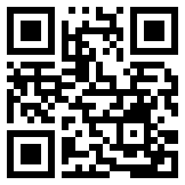
SIP3115 • D3 TEKNIK SIPIL
Statika struktur statis tertentu dengan AI Tutor, AR, dan Alat Hitung
Dham
Politeknik Negeri Padang
Jurusan Teknik Sipil


Kover terpilih: Varian 1 – Hologram Kesetimbangan, logo resmi PNP, kode QR ke SPADA PNP (berkas kover.html).
| Butir | Isi |
|---|---|
| Judul | Mekanika Teknik 1: Statika Struktur Statis Tertentu – E-Book Interaktif AI • AR • Alat Hitung |
| Penulis | Dham [gelar lengkap mohon dilengkapi] |
| Pemegang hak cipta | © 2026 Dham |
| Penerbit | [mohon dilengkapi – mis. diterbitkan mandiri oleh penulis atau melalui unit penerbitan PNP] |
| ISBN | [menunggu nomor] |
| Edisi | Edisi pertama, 2026 • Versi e-book 1.0 |
| Penyunting / desain | [mohon dilengkapi] |
| Alamat daring | SPADA PNP – https://spadasp.pnp.ac.id |
| Ketentuan penggunaan | Dilarang memperbanyak atau menyebarluaskan sebagian atau seluruh isi buku tanpa izin tertulis pemegang hak cipta, kecuali untuk kutipan pembelajaran dengan menyebut sumber. Perlindungan mengacu pada Undang-Undang Republik Indonesia Nomor 28 Tahun 2014 tentang Hak Cipta. |
| Catatan | Angka beban, kapasitas, dan data kasus dalam buku ini disederhanakan untuk pembelajaran. Perencanaan nyata wajib mengacu pada standar yang berlaku dan diperiksa oleh tenaga ahli. |
Puji syukur ke hadirat Tuhan Yang Maha Esa atas selesainya e-book Mekanika Teknik 1 ini. Buku ini disusun untuk mendampingi mahasiswa D3 Teknik Sipil Politeknik Negeri Padang pada semester pertama, saat mereka mulai belajar “membaca” aliran gaya pada bangunan.
Buku ini mengikuti Kurikulum PSD3TS berbasis Outcome-Based Education (revisi 2026) dan RPS Mekanika Teknik I. Setiap bab diawali dari benda dan bangunan di sekitar kita – kanopi sekolah, tandon di ruko, gudang hasil panen – lalu dibawa ke hitungan dan keputusan teknis. Prinsip pembelajaran mendalam diterapkan melalui pengalaman memahami, mengaplikasi, dan merefleksi dengan suasana yang berkesadaran, bermakna, dan menggembirakan.
Sebagai e-book interaktif, buku ini dilengkapi AI Tutor yang membimbing dengan pertanyaan, objek augmented reality (AR) yang dapat diamati dari berbagai sisi, dan alat hitung yang menampilkan langkah penyelesaian. Fitur-fitur itu bukan pengganti berpikir, melainkan teman berlatih. Kebiasaan menggambar diagram benda bebas, menulis satuan, dan memeriksa kesetimbangan tetap menjadi kunci.
Terima kasih kepada pimpinan Jurusan Teknik Sipil dan Program Studi D3 Teknik Sipil PNP, tim penyusun kurikulum, rekan dosen, serta mahasiswa yang memberi masukan. Kritik dan saran untuk perbaikan edisi berikutnya sangat diharapkan.
Padang, [tanggal] 2026 • Penulis, Dham
| Ikon | Nama | Cara memakai |
|---|---|---|
| i-capaian | Capaian Pembelajaran | Baca di awal bab; tandai indikator yang sudah tercapai di akhir bab. |
| i-peta-konsep | Peta Konsep | Ketuk kotak untuk melompat ke subbab. |
| i-apersepsi | Apersepsi | Jawab pertanyaan pemantik di kolom catatan sebelum membaca materi. |
| i-contoh-soal | Contoh Soal | Coba kerjakan dulu, lalu buka “Langkah” satu per satu. |
| i-ai-tutor | AI Tutor | Pilih kartu prompt → “Salin & Buka Chatbot” atau tanya langsung; tutor tidak memberi jawaban tugas. |
| i-zona-ar | Zona AR | Pindai kode QR/ketuk tombol → izinkan kamera → arahkan ke lantai datar → ketuk hotspot. Perangkat tanpa AR menampilkan gambar 360°. |
| i-alat-hitung | Alat Hitung | Isi data, tekan Hitung, baca langkahnya; ekspor CSV/PDF untuk laporan. |
| i-kuis | Kuis | Skor tersimpan di perangkat; ulangi sampai ≥ 80. |
| i-refleksi | Refleksi | Isi skala 1–5 dan rencana tindak lanjut; muncul di grafik progres. |
| i-catatan / i-penanda | Catatan & Penanda | Tersimpan di perangkat (tidak dikirim ke server). |
| i-mode-gelap / ukuran huruf | Tampilan | Atur mode gelap, ukuran huruf 87,5–150%, dan mode baca suara. |
Membaca tanpa internet: buka e-book sekali saat daring, lalu pilih “Pasang/Tambahkan ke layar utama”; bab yang sudah dibuka dapat dibaca luring (PWA). AI Tutor mode langsung memerlukan internet; kartu prompt tetap dapat disalin.
| Butir | Isi |
|---|---|
| Mata kuliah / kode | Mekanika Teknik I / SIP3115 |
| Semester / SKS | I / 2 SKS (1 teori, 1 praktik); 340 menit per minggu |
| Bahan kajian | BK 1 Matematika Terapan & Sains Rekayasa (P2 Mekanika teknik dan statika) |
| Deskripsi | Mata kuliah fondasi yang membekali kemampuan memahami gaya dan kesetimbangan serta menghitung gaya dalam struktur statis tertentu (balok, balok Gerber, portal, portal tiga sendi, dan rangka batang). Pembelajaran dimulai dari benda dan bangunan di sekitar kampus, berlanjut ke kasus nyata, dan ditutup proyek tim model jembatan rangka yang diuji beban. |
| Prasyarat / lanjutan | Tidak ada (MK fondasi; disarankan paralel dengan Matematika dan Statistik I) → Mekanika Teknik II → Mekanika Teknik III → Struktur Beton I, Struktur Baja |
| Metode | Ceramah interaktif, PBL, Case Method (3 kasus), Team-Based Project (jembatan rangka), tutor sebaya |
CPL 2 (level I): Menguasai konsep dasar matematika terapan, fisika, dan sains rekayasa untuk memahami, mengidentifikasi, dan merumuskan masalah teknis sederhana pada perancangan serta pelaksanaan struktur gedung maksimal 3 lantai, konstruksi jalan, dan bangunan air berbasis data. Indikator: IK 2.1 dan IK 2.2.
| CPMK | Rumusan | Bab | Bobot |
|---|---|---|---|
| CPMK-1 | Menjelaskan konsep gaya, momen, dan kesetimbangan serta menyusun DBB struktur sederhana | 1–3 | 11% |
| CPMK-2 | Menghitung reaksi tumpuan dan gaya dalam balok statis tertentu serta menggambar SFD, BMD, NFD | 4–6 | 28% |
| CPMK-3 | Menganalisis gaya dalam balok Gerber, portal statis tertentu, dan portal tiga sendi | 7–9 | 21% |
| CPMK-4 | Menghitung gaya batang rangka batang dengan metode titik buhul dan Ritter | 10–11 | 18% |
| CPMK-5 | Memverifikasi hasil hitung manual dengan lembar hitung/perangkat lunak dan menyajikan laporan tim secara jujur | 11 | 22% |
Komponen penilaian: Partisipatif 10% • Case Method 25% • Team-Based Project 30% • Tugas & Kuis 10% • UTS 12% • UAS 13%. CPMK tuntas bila skor ≥ 70.
Gaya & satuan (Bab 1) → Momen & resultan (Bab 2) → Kesetimbangan & DBB (Bab 3)
Kesetimbangan → Reaksi tumpuan (Bab 4) → Gaya dalam balok (Bab 5) → Overhang, beban segitiga/trapesium (Bab 6) → Balok Gerber (Bab 7)
Gaya dalam → Portal statis tertentu (Bab 8) → Portal tiga sendi (Bab 9)
Kesetimbangan titik → Rangka batang (Bab 10) → Proyek jembatan rangka (Bab 11)
Semua → Mekanika Teknik II (tegangan, lendutan) → Mekanika Teknik III (statis tak tentu) → Struktur Beton I, Struktur Baja
| Bagian | Judul | Minggu | Status progres |
|---|---|---|---|
| Bagian Awal | Kover, identitas, kata pengantar, petunjuk, deskripsi MK, CPL–CPMK, peta konsep | – | – |
| Bab 1 | Gaya, Vektor, dan Satuan SI | 1 | ☐ |
| Bab 2 | Resultan, Momen, dan Kopel | 2 | ☐ |
| Bab 3 | Kesetimbangan, Tumpuan, dan Diagram Benda Bebas | 3 | ☐ |
| Bab 4 | Reaksi Tumpuan dan Balok Kantilever (Case Method 1) | 4 | ☐ |
| Bab 5 | Gaya Dalam Balok: NFD, SFD, dan BMD | 5 | ☐ |
| Bab 6 | Balok Overhang dengan Beban Segitiga dan Trapesium (Case Method 2) | 6 | ☐ |
| Bab 7 | Balok Gerber | 7 | ☐ |
| Evaluasi | Evaluasi Tengah Semester | 8 | ☐ |
| Bab 8 | Portal Statis Tertentu | 9 | ☐ |
| Bab 9 | Portal Tiga Sendi (Case Method 3) | 10 | ☐ |
| Bab 10 | Rangka Batang: Titik Buhul dan Ritter | 11 | ☐ |
| Bab 11 | Proyek Tim: Model Jembatan Rangka | 12–15 | ☐ |
| Evaluasi | Evaluasi Akhir Semester | 16 | ☐ |
| Bagian Akhir | Evaluasi akhir buku, glosarium, daftar pustaka, indeks, lampiran, biodata, sertifikat | – | – |
Minggu 1 • Sub-CPMK 1.1 • CPMK-1 • CPL 2 / IK 2.1 • Estimasi belajar: 120 menit mandiri + 220 menit kelas/studio
Sub-CPMK 1.1: Mahasiswa mampu menjelaskan konsep gaya, vektor, dan satuan SI pada struktur.
| Kode | Indikator | Level Bloom |
|---|---|---|
| 1.1.a | Menjelaskan perbedaan massa dan berat serta satuannya dalam SI | C2 – menjelaskan |
| 1.1.b | Mengonversi beban sehari-hari (liter air, zak semen, kgf) menjadi newton/kilonewton | C3 – menerapkan |
| 1.1.c | Menguraikan gaya miring menjadi komponen horizontal dan vertikal | C3 – menghitung |
| 1.1.d | Menjumlahkan minimal tiga gaya secara grafis dan analitis | C3 – menghitung |
| 1.1.e | Memeriksa kewajaran arah resultan berdasarkan kuadran | C4 – menganalisis |
Diagram interaktif (dapat diklik ke subbab):
Gaya → (1.1) besaran & satuan SI → massa vs berat → konversi beban
Gaya → (1.2) vektor: besar, arah, titik tangkap, garis kerja
Vektor → (1.3) penguraian komponen Fx, Fy
Komponen → (1.4) penjumlahan: grafis (jajar genjang, poligon) & analitis (ΣFx, ΣFy → R, θ)
Resultan → dipakai di Bab 2 (momen) dan Bab 3 (kesetimbangan)
Pertanyaan pemantik: Mengapa kanopi bisa roboh? Coba ingat kanopi beton di depan sekolah atau ruko. Apa saja yang “menarik” kanopi ke bawah? Apa yang menahannya agar tidak jatuh?
Kasus di sekitar kampus: Tiang lampu jalan di tepi jalan menuju kampus ditahan oleh kabel penegang yang miring. Kabel itu menarik tiang ke bawah dan ke samping sekaligus. Bagaimana kita menghitung “seberapa besar ke samping” dan “seberapa besar ke bawah”? Bab ini menjawabnya.
Gambar 1.1. Kanopi beton di depan gedung sekolah (ilustrasi baru, sumber: dokumen penulis)
Teks alternatif: Kanopi beton menjorok dari dinding gedung sekolah, dengan panah beban hujan dan beban sendiri mengarah ke bawah.
Prompt gambar: Clean educational illustration of a reinforced concrete cantilever canopy above a school entrance in Indonesia, glowing orange arrows showing self-weight and rain load pointing down, cyan outline highlighting the connection to the wall, flat vector style, navy background, no text
Dalam mekanika teknik kita memakai Sistem Internasional (SI). Tiga besaran dasar yang paling sering dipakai adalah panjang (meter, m), massa (kilogram, kg), dan waktu (detik, s). Gaya adalah besaran turunan dengan satuan newton (N).
Satu newton adalah gaya yang membuat benda bermassa 1 kg mengalami percepatan 1 m/s². Di lapangan, newton terlalu kecil, sehingga kita memakai kilonewton (kN): 1 kN = 1.000 N.
Massa dan berat berbeda. Massa (kg) adalah banyaknya materi; nilainya sama di mana pun. Berat (N) adalah gaya tarik bumi pada massa itu. Analogi: satu karung beras 50 kg tetap 50 kg di Padang maupun di Bukittinggi, tetapi beratnya adalah gaya yang dirasakan bahu kita saat memikulnya.
Keterangan: W = berat (N); m = massa (kg); g = percepatan gravitasi = 9,81 m/s². Batasan: berlaku di permukaan bumi; nilai g = 9,81 m/s² dipakai untuk semua hitungan di buku ini. Rujukan: BIPM (2019); Hibbeler (2024a) Bab 1.
Satuan lama kilogram-gaya (kgf) masih sering dijumpai di lapangan, misalnya pada label kapasitas. 1 kgf = 9,80665 N ≈ 9,81 N.
| Satuan | Dipakai untuk | Contoh di lapangan |
|---|---|---|
| N, kN | Gaya terpusat (beban titik) | Berat tandon air di atas balok |
| kN/m | Beban merata sepanjang garis | Berat dinding bata di atas balok |
| kN/m² | Beban merata pada luas | Beban hidup lantai kelas (SNI 1727:2020) |
| kN·m | Momen (Bab 2) | Momen di tumpuan jepit kanopi |
Besaran skalar hanya punya besar, misalnya massa 50 kg atau panjang 3 m. Besaran vektor punya besar dan arah. Gaya adalah vektor, sehingga gaya 5 kN ke bawah berbeda pengaruhnya dengan gaya 5 kN ke samping.
Sebuah gaya ditentukan oleh tiga unsur:
Besar – berapa kN.
Arah – sudut terhadap sumbu acuan dan ke mana panahnya menunjuk.
Titik tangkap – di titik mana gaya bekerja pada benda.
Garis lurus yang melalui titik tangkap searah gaya disebut garis kerja. Pada benda tegar (rigid body – benda yang dianggap tidak berubah bentuk), gaya boleh digeser sepanjang garis kerjanya tanpa mengubah pengaruhnya. Prinsip ini disebut prinsip transmisibilitas.
Analogi: mendorong mobil mogok dari belakang atau menariknya dengan tali dari depan pada garis yang sama memberi pengaruh yang sama pada gerak mobil.
Gambar 1.2. Tiga unsur gaya pada tiang lampu berkabel (ilustrasi baru, sumber: dokumen penulis)
Teks alternatif: Tiang lampu vertikal ditarik kabel miring. Titik tangkap di ujung kabel pada tiang, panah gaya sepanjang kabel, dan garis kerja putus-putus.
Prompt gambar: Minimal technical illustration of a street light pole held by a diagonal guy wire, glowing cyan force vector along the cable, dashed line of action, labeled point of application as a small orange dot, perspective grid floor, navy background, no text
Gaya miring lebih mudah dihitung bila diuraikan menjadi dua komponen yang saling tegak lurus: komponen horizontal (Fx) dan komponen vertikal (Fy). Analogi: bayangan tongkat miring di siang hari (ke bawah) dan di sore hari (ke samping).
Keterangan: F = besar gaya (kN); θ = sudut gaya diukur dari sumbu x positif, berlawanan jarum jam (°); Fx, Fy = komponen (kN), bertanda + ke kanan/ke atas dan – ke kiri/ke bawah. Batasan: sumbu x dan y harus saling tegak lurus.
Bila arah gaya diberikan sebagai kemiringan (misalnya 3 : 4), pakai segitiga kemiringan. Sisi miring = √(3² + 4²) = 5, sehingga cos θ = 4/5 dan sin θ = 3/5.
Keterangan: h dan v = angka kemiringan horizontal dan vertikal (tanpa satuan); s = sisi miring segitiga kemiringan.
Beberapa gaya yang bekerja pada satu titik dapat diganti oleh satu gaya pengganti yang disebut resultan (R).
Cara grafis. Dua gaya dijumlahkan dengan hukum jajar genjang: gambar kedua gaya dari titik yang sama, lengkapi jajar genjangnya, dan diagonalnya adalah R. Untuk tiga gaya atau lebih, pakai poligon gaya: susun panah gaya ujung ke pangkal; garis dari pangkal pertama ke ujung terakhir adalah R. Cara ini cepat untuk memeriksa, tetapi ketelitiannya bergantung pada skala gambar.
Cara analitis (dianjurkan). Jumlahkan semua komponen, lalu susun kembali:
Keterangan: R = besar resultan (kN); θ = sudut resultan dari sumbu x positif (°). Batasan: kalkulator memberi arctan hanya di rentang –90° s.d. 90°. Tentukan kuadran dari tanda ΣFx dan ΣFy: bila ΣFx negatif, tambahkan 180°.
Untuk dua gaya dengan sudut apit α, dapat juga dipakai hukum cosinus:
Keterangan: α = sudut antara kedua gaya ketika keduanya digambar dari titik yang sama (°).
Tujuh contoh soal sudah tersebar di setiap subbab hitungan (1.1–1.7): subbab 1.1 (2 contoh), 1.3 (2 contoh), 1.4 (3 contoh). Semua pembahasan diakhiri pemeriksaan kewajaran.
Kartu prompt siap salin (tombol “Salin & Buka Chatbot”) dan tombol tanya langsung. Tutor bekerja dengan metode Sokratik: membimbing dengan pertanyaan, tidak langsung memberi jawaban tugas.
Kartu prompt AI Tutor (salin ke chatbot)
| Aspek | Spesifikasi |
|---|---|
| Nama objek | ar-bab01-tiang-kabel.glb (+ .usdz untuk iOS) |
| Tujuan belajar | Melihat gaya kabel sebagai vektor 3D dan komponennya (Sub-CPMK 1.1, indikator 1.1.c) |
| Pembuatan model | Blender: tiang baja Ø 15 cm tinggi 6 m, kabel baja, angkur beton; ekspor GLB terkompresi Draco ≤ 3 MB |
| Hotspot & label | (1) Titik tangkap gaya kabel; (2) Panah F = 5 kN sepanjang kabel; (3) Komponen Fx; (4) Komponen Fy; (5) Sudut 60°; (6) Angkur tanah |
| Animasi | Tombol “Uraikan gaya”: panah F terbelah menjadi Fx dan Fy (2 detik) |
| Kode QR | Menuju ar/bab-01.html (alamat penuh menyusul setelah URL LMS PNP tersedia) |
| Cadangan | Gambar putar 360° (24 bingkai) untuk perangkat tanpa dukungan AR |
| Pertanyaan pengamatan | (a) Jika sudut kabel diperkecil menjadi 45°, komponen mana yang bertambah? (b) Mengapa angkur ditanam miring searah kabel? (c) Di mana garis kerja gaya kabel memotong tanah? |
Petunjuk: pindai kode QR → izinkan kamera → arahkan ke lantai datar → ketuk untuk menempatkan model → ketuk hotspot untuk membaca label.

Zona AR (model 3D) – versi interaktif
Pindai kode QR untuk membuka e-book interaktif di SPADA PNP, lalu buka Gaya, Vektor, dan Satuan SI.
| Aspek | Spesifikasi |
|---|---|
| Tujuan | Menghitung komponen, ΣFx, ΣFy, resultan R, dan sudut θ dari 2–8 gaya; mengonversi satuan gaya |
| Rumus | \(F_x=F\cos\theta;\ F_y=F\sin\theta;\ R=\sqrt{(\Sigma F_x)^2+(\Sigma F_y)^2};\ \theta=\operatorname{atan2}(\Sigma F_y,\Sigma F_x)\) |
| Input | Fᵢ (kN; 0 < F ≤ 10.000; contoh 10) • θᵢ (°; 0–360; contoh 60) • tombol tambah/hapus gaya • konversi: nilai + satuan (N, kN, kgf, ton-gaya) |
| Output | Tabel komponen, ΣFx, ΣFy, R (kN, 2 desimal), θ (°, 1 desimal), kuadran |
| Validasi | Kolom kosong/negatif ditolak: “Besar gaya harus angka lebih dari 0 kN.” Sudut di luar 0–360 diminta dinormalkan. |
| Langkah | Ditampilkan per gaya (seperti Contoh 1.6) + penentuan kuadran |
| Grafik | Poligon gaya dan panah resultan (Chart.js mode scatter + garis) |
| Fitur | Reset, salin hasil, ekspor CSV/PDF |
| Kasus uji | Input | Hasil yang diharapkan | Rujukan |
|---|---|---|---|
| 1 | 10 kN @0°, 8 kN @60°, 6 kN @150° | R = 13,27 kN; θ = 48,4° | Contoh 1.6 |
| 2 | 4 kN @0°, 3 kN @60° | R = 6,08 kN | Contoh 1.5 |
| 3 | 12 kN @0°, 15 kN @90°, 10 kN @225° | R = 9,34 kN; θ = 58,1° | Contoh 1.7 |
| 4 (konversi) | 1.000 kg massa → berat | 9,81 kN | Contoh 1.1 |
Alat hitung – versi interaktif
Pindai kode QR untuk membuka e-book interaktif di SPADA PNP, lalu buka Gaya, Vektor, dan Satuan SI.
Sebuah tiang lampu di tepi jalan kampus mulai miring setelah hujan deras. Tiang ditahan dua kabel penegang yang dipasang simetris, masing-masing membentuk sudut 45° terhadap tiang. Petugas ingin agar kedua kabel hanya menghasilkan gaya ke bawah sebesar 10 kN pada tiang (tanpa dorongan ke samping).
Berapa gaya tarik tiap kabel? (Petunjuk: komponen horizontal saling meniadakan; 2T cos 45° = 10 kN.)
Apa yang terjadi pada tiang jika salah satu kabel kendur?
Usulkan satu tindakan sederhana yang aman untuk menegakkan tiang kembali.
Kunci dosen: T = 10 ÷ (2 × 0,707) = 7,07 kN per kabel; jika satu kabel kendur, komponen horizontal kabel lain tidak terimbangi sehingga tiang tertarik ke samping.
Ketiga kotak sudah ditempatkan di dalam subbab: Info Penting (1.1), Tips Lapangan dan Peringatan K3 (1.4).
Gaya adalah vektor: punya besar, arah, dan titik tangkap; satuan SI-nya newton (N), di lapangan kN.
Berat = massa × 9,81 m/s². 1.000 liter air ≈ 9,81 kN; 1 kgf ≈ 9,81 N.
Gaya miring diuraikan: Fx = F cos θ, Fy = F sin θ, dengan tanda sesuai arah.
Resultan dihitung dari ΣFx dan ΣFy; selalu periksa kuadran.
Cara grafis untuk memeriksa, cara analitis untuk hasil teliti.
Infografik: satu panel “F → (Fx, Fy) → ΣFx, ΣFy → R, θ” dengan ikon langkah dan warna sesuai sistem desain.
Satuan gaya dalam SI adalah …
Massa 1 kg memiliki berat sekitar 9,81 N di permukaan bumi.
Tandon berisi 500 liter air. Beratnya = … kN
Tiga unsur yang menentukan sebuah gaya adalah …
F = 20 kN, θ = 30°. Fx = … kN; Fy = … kN
Gaya 15 kN miring 3 : 4 (vertikal : horizontal) ke kanan-atas. Fx dan Fy = …
Jodohkan: (1) kN (2) kN/m (3) kN/m² (4) kN·m dengan (A) momen (B) beban luas (C) gaya terpusat (D) beban garis
Dua gaya 6 kN dan 8 kN saling tegak lurus. R = … kN
ΣFx = –5 kN dan ΣFy = +5 kN. Arah resultan …
Andi menjumlahkan gaya 3 kN dan 4 kN yang membentuk sudut 90° dan mendapat 7 kN. Penilaian yang tepat …
Rancang dua kabel simetris agar resultannya tepat 10 kN vertikal ke bawah pada tiang. Tentukan sudut dan gaya tiap kabel.
Jawaban: ________________________Beri nilai pemahamanmu (1 = belum paham, 5 = sangat paham):
Saya dapat menjelaskan beda massa dan berat. 1 2 3 4 5
Saya dapat menguraikan gaya miring menjadi Fx dan Fy. 1 2 3 4 5
Saya dapat menghitung resultan tiga gaya dan menentukan kuadrannya. 1 2 3 4 5
Apa yang sudah saya pahami? Apa yang belum? (kotak isian tersimpan di perangkat) • Rencana tindak lanjut: jika ada skor ≤ 3, ulangi subbab terkait, pakai Alat Hitung, lalu tanyakan ke AI Tutor atau tutor sebaya.
| Istilah | Arti |
|---|---|
| Gaya | Tarikan atau dorongan yang dapat mengubah gerak atau bentuk benda; satuan N. |
| Garis kerja | Garis lurus melalui titik tangkap searah gaya. |
| Komponen gaya | Bagian gaya searah sumbu x atau y. |
| Resultan | Satu gaya pengganti yang pengaruhnya sama dengan beberapa gaya. |
| Transmisibilitas | Prinsip bahwa gaya boleh digeser sepanjang garis kerjanya pada benda tegar. |
| Vektor | Besaran yang memiliki besar dan arah. |
BIPM. (2019). The International System of Units (SI) (9th ed.). Bureau International des Poids et Mesures.
Hibbeler, R. C. (2024a). Engineering mechanics: Statics (15th ed., SI units). Pearson. (Bab 1–2)
Meriam, J. L., Kraige, L. G., & Bolton, J. N. (2018). Engineering mechanics: Statics (9th ed.). Wiley.
Badan Standardisasi Nasional. (2020). SNI 1727:2020 Beban desain minimum dan kriteria terkait untuk bangunan gedung dan struktur lain. BSN.
Minggu 2 • Sub-CPMK 1.2 • CPMK-1 • CPL 2 / IK 2.1 • Estimasi belajar: 120 menit mandiri + 220 menit kelas/studio
Sub-CPMK 1.2: Mahasiswa mampu menghitung resultan gaya, momen, dan kopel.
| Kode | Indikator | Level Bloom |
|---|---|---|
| 1.2.a | Menghitung momen gaya terhadap suatu titik dengan tanda yang benar | C3 – menghitung |
| 1.2.b | Menerapkan teorema Varignon untuk gaya miring | C3 – menerapkan |
| 1.2.c | Menjelaskan sifat kopel dan menghitung momen kopel | C2–C3 |
| 1.2.d | Menentukan besar dan letak resultan gaya sejajar serta beban terdistribusi | C3 – menghitung |
| 1.2.e | Memindahkan gaya ke titik lain menjadi gaya + kopel (beban eksentris) | C4 – menganalisis |
Kriteria keberhasilan (RPS): resultan dan momen dihitung benar pada ≥ 80% soal.
Gaya (Bab 1) → (2.1) momen terhadap titik: M = F·d
Momen → (2.2) Varignon: jumlah momen komponen
Momen → (2.3) kopel: dua gaya sejajar berlawanan
Resultan → (2.4) gaya sejajar dan beban terdistribusi (merata, segitiga)
Gaya + kopel → (2.5) memindahkan gaya / beban eksentris → Bab 3 (kesetimbangan)
Pertanyaan pemantik: Saat ban mobil bocor, mengapa mur roda lebih mudah dibuka bila kunci roda dipegang di ujung, bahkan sambil diinjak? Mengapa gagang pintu dipasang jauh dari engsel?
Kasus nyata: Petugas irigasi membuka pintu air dengan memutar roda besar. Roda yang lebih besar terasa lebih ringan diputar. Apa yang “diperbesar” oleh roda itu?
Gambar 2.1. Kunci roda dan lengan momen (ilustrasi baru, sumber: dokumen penulis)
Teks alternatif: Kunci roda pada mur ban mobil; tangan menekan ujung kunci; jarak tegak lurus dari mur ke garis kerja gaya ditandai sebagai lengan momen d.
Prompt gambar: Minimal technical illustration of a lug wrench on a car wheel nut, orange force arrow at the end of the handle, glowing cyan dimension line showing the perpendicular moment arm, curved arrow showing rotation, navy background, flat vector, no text
Gaya tidak hanya menggeser benda, tetapi juga dapat memutar benda. Kecenderungan memutar ini disebut momen. Besarnya bergantung pada besar gaya dan lengan momen (d) – jarak tegak lurus dari titik putar ke garis kerja gaya.
Keterangan: M_O = momen terhadap titik O (kN·m); F = besar gaya (kN); d = jarak tegak lurus O ke garis kerja F (m). Konvensi tanda buku ini: berlawanan arah jarum jam (↺) positif, searah jarum jam (↻) negatif. Batasan: d harus tegak lurus; jika garis kerja melalui O, d = 0 sehingga M = 0. Rujukan: Hibbeler (2024a) Bab 4.
Mencari jarak tegak lurus gaya miring sering merepotkan. Teorema Varignon memudahkannya: momen sebuah gaya terhadap suatu titik sama dengan jumlah momen komponen-komponennya terhadap titik yang sama.
Keterangan: (x, y) = koordinat titik tangkap gaya terhadap O (m); Fx, Fy = komponen gaya dengan tanda (kN). Hasil positif berarti berlawanan jarum jam.
Kopel adalah pasangan dua gaya yang sama besar, sejajar, berlawanan arah, dan garis kerjanya berjarak d. Resultan gayanya nol, sehingga kopel tidak menggeser benda – hanya memutarnya.
Keterangan: F = besar salah satu gaya (kN); d = jarak tegak lurus antara kedua garis kerja (m). Sifat penting: momen kopel sama terhadap titik mana pun (free vector – vektor bebas).
Pada balok, beban umumnya sejajar (vertikal). Resultannya adalah jumlah aljabar gaya, dan letaknya ditentukan dengan syarat: momen resultan = jumlah momen gaya-gaya terhadap titik acuan.
Keterangan: Fᵢ = gaya ke-i (kN); xᵢ = jarak gaya ke-i dari titik acuan (m); x̄ = letak resultan dari titik acuan (m).
Beban terdistribusi (misalnya berat dinding di atas balok) diganti dengan satu gaya pengganti yang besarnya sama dengan luas diagram beban dan bekerja di titik berat diagram tersebut:
| Bentuk beban | Besar resultan | Letak resultan | LaTeX |
|---|---|---|---|
| Merata q sepanjang L | R = q · L | L/2 dari ujung | R=qL,\ \bar{x}=L/2 |
| Segitiga 0 → q sepanjang L | R = ½ · q · L | 2L/3 dari ujung nol (L/3 dari ujung q) | R=\tfrac12 qL,\ \bar{x}=\tfrac23 L |
| Trapesium q₁ → q₂ | Pisahkan menjadi persegi panjang (q₁·L) + segitiga (½(q₂ – q₁)·L) | Masing-masing di titik beratnya | — |
Keterangan: q = intensitas beban (kN/m); L = panjang beban (m). Beban trapesium dipakai lagi di Bab 6.
Sebuah gaya F di titik A boleh dipindahkan ke titik B (di luar garis kerjanya) asalkan ditambah kopel M = F·e, dengan e = jarak tegak lurus garis kerja ke B. Inilah dasar beban eksentris pada kolom: beban yang tidak tepat di as kolom menimbulkan momen.
Keterangan: e = eksentrisitas, jarak tegak lurus garis kerja F ke titik B (m).
Sepuluh contoh soal tersebar di setiap subbab (2.1–2.5), masing-masing 2 contoh, termasuk pemeriksaan dengan dua cara (Contoh 2.2 dan 2.4).
Kartu prompt AI Tutor (salin ke chatbot)
| Aspek | Spesifikasi |
|---|---|
| Nama objek | ar-bab02-lengan-momen.glb (+ .usdz) |
| Tujuan belajar | Melihat pengaruh lengan momen dan arah gaya terhadap momen (indikator 1.2.a dan 1.2.c) |
| Pembuatan model | Blender: roda mobil + kunci roda 0,4 m; daun pintu 0,9 m dengan engsel dan gagang; GLB ≤ 4 MB |
| Hotspot & label | (1) Titik putar (mur/engsel); (2) Gaya F; (3) Lengan momen d; (4) Arah putar ↺/↻; (5) Pasangan gaya kopel pada kunci T |
| Animasi | Penggeser posisi tangan 0,1–0,4 m: label M = F·d berubah langsung |
| Kode QR | Menuju ar/bab-02.html |
| Cadangan | Gambar putar 360° dan animasi 2D |
| Pertanyaan pengamatan | (a) Di posisi mana tangan menghasilkan momen terbesar? (b) Jika gaya diarahkan sejajar gagang, berapa momennya? (c) Mengapa kunci T tidak menggeser mur ke samping? |
Zona AR (model 3D) – versi interaktif
Pindai kode QR untuk membuka e-book interaktif di SPADA PNP, lalu buka Resultan, Momen, dan Kopel.
| Aspek | Spesifikasi |
|---|---|
| Tujuan | (A) momen gaya terhadap titik (cara langsung & Varignon); (B) resultan dan letak gaya sejajar + beban merata/segitiga/trapesium |
| Rumus | \(M_O=xF_y-yF_x;\ R=\sum F_i;\ \bar x=\frac{\sum F_i x_i}{R};\ R_{seg}=\tfrac12 qL\) |
| Input (A) | F (kN; >0), θ (°; 0–360), koordinat titik tangkap x, y (m; –100 s.d. 100) |
| Input (B) | Daftar beban: jenis (titik/merata/segitiga/trapesium), besar (kN atau kN/m), posisi awal & panjang (m); panjang balok L (m; 0,5–50) |
| Output | M_O (kN·m) dan arah ↺/↻; R (kN) dan x̄ (m); diagram balok dengan panah resultan |
| Validasi | Posisi beban di luar balok ditolak: “Beban harus berada di antara 0 dan L m.” |
| Langkah & fitur | Tabel Fᵢ, xᵢ, Fᵢxᵢ; reset; salin; ekspor CSV/PDF |
| Kasus uji | Input | Hasil yang diharapkan | Rujukan |
|---|---|---|---|
| 1 | 10 kN @1 m; 20 kN @3 m; 15 kN @5 m | R = 45 kN; x̄ = 3,22 m | Contoh 2.7 |
| 2 | Fx = 6, Fy = 8 kN di (3; 2) m | M_O = +12 kN·m | Contoh 2.3 |
| 3 | Segitiga 0 → 6 kN/m, L = 3 m | R = 9 kN; x̄ = 2,0 m dari ujung nol | Contoh 2.8b |
| 4 | F = 5 kN, θ = 330°, di (2; 0) m | M_O = –5,00 kN·m | Contoh 2.2/2.4 |
Alat hitung – versi interaktif
Pindai kode QR untuk membuka e-book interaktif di SPADA PNP, lalu buka Resultan, Momen, dan Kopel.
Pemilik ruko ingin memasang papan reklame. Rangka papan menumpu pada satu kolom pipa; berat papan 3 kN bekerja 0,6 m dari as kolom, dan angin memberi gaya horizontal 2 kN setinggi 2,5 m dari dasar kolom.
Pindahkan berat papan ke as kolom: berapa gaya dan kopelnya?
Hitung momen total terhadap dasar kolom akibat berat dan angin.
Dengan 3–4 kalimat, beri saran kepada pemilik ruko agar papan lebih aman.
Kunci dosen: 3 kN + kopel 1,8 kN·m; momen angin 2 × 2,5 = 5,0 kN·m; bila keduanya memutar searah, total 6,8 kN·m. Saran: kurangi eksentrisitas, tambah kolom/pengaku, periksa angkur.
Ditempatkan di akhir subbab 2.5.
Momen = gaya × jarak tegak lurus (kN·m); tetapkan titik dan konvensi tanda (↺ positif).
Varignon: M_O = x·Fy – y·Fx – cara praktis untuk gaya miring.
Kopel: dua gaya sejajar berlawanan; resultan gaya nol, momen sama terhadap titik mana pun.
Resultan gaya sejajar: R = ΣF, letak x̄ = ΣFx/R; beban merata qL di L/2, segitiga ½qL di 2L/3 dari ujung nol.
Gaya boleh dipindah ke titik lain dengan menambah kopel F·e (beban eksentris).
Satuan momen dalam SI …
Resultan gaya sebuah kopel sama dengan nol.
Gaya 300 N tegak lurus gagang pada jarak 0,25 m. M = … N·m
Gaya vertikal 4 kN bekerja 3 m (horizontal) dari titik A. M_A = … kN·m
Fx = 3 kN, Fy = 4 kN bekerja di (2; 1) m. M_O = … kN·m
Momen sebuah gaya terhadap titik O bernilai nol bila …
Beban merata 5 kN/m sepanjang 4 m. R = … kN di … m dari ujung
Beban segitiga 0 → 9 kN/m sepanjang 6 m. R = … kN, letak … m dari ujung nol
Beban 5 kN @0 m, 10 kN @2 m, 5 kN @6 m. Letak resultan x̄ = … m
Budi memindahkan beban 10 kN dari konsol (e = 0,2 m) ke as kolom tanpa menambah apa pun. Penilaian …
Platform 4 m memikul pompa 6 kN di x = 1 m. Rancang letak tandon 12 kN agar resultan tepat di tengah platform, lalu jelaskan mengapa letak ini menguntungkan tumpuan.
Jawaban: ________________________Saya dapat menentukan lengan momen dan tanda momen. 1 2 3 4 5
Saya dapat memakai teorema Varignon. 1 2 3 4 5
Saya dapat menentukan besar dan letak resultan beban merata dan segitiga. 1 2 3 4 5
Saya dapat menjelaskan beban eksentris sebagai gaya + kopel. 1 2 3 4 5
Apa yang sudah/belum saya pahami? • Tindak lanjut: skor ≤ 3 → ulangi subbab, kerjakan ulang contoh dengan Alat Hitung, diskusikan dengan tutor sebaya.
| Istilah | Arti |
|---|---|
| Momen | Kecenderungan gaya memutar benda terhadap suatu titik; satuan kN·m. |
| Lengan momen | Jarak tegak lurus dari titik putar ke garis kerja gaya. |
| Kopel | Dua gaya sejajar, sama besar, berlawanan arah, tidak segaris. |
| Beban terdistribusi | Beban yang tersebar sepanjang garis atau luas (kN/m, kN/m²). |
| Eksentrisitas | Jarak garis kerja beban dari as elemen (mis. as kolom). |
| Teorema Varignon | Momen gaya = jumlah momen komponen-komponennya. |
Hibbeler, R. C. (2024a). Engineering mechanics: Statics (15th ed., SI units). Pearson. (Bab 4)
Meriam, J. L., Kraige, L. G., & Bolton, J. N. (2018). Engineering mechanics: Statics (9th ed.). Wiley.
Hibbeler, R. C. (2024b). Structural analysis (11th ed.). Pearson.
Minggu 3 • Sub-CPMK 1.3 • CPMK-1 • CPL 2 / IK 2.1 • Estimasi belajar: 120 menit mandiri + 220 menit kelas/studio
Sub-CPMK 1.3: Mahasiswa mampu menyusun diagram benda bebas (DBB) dan menerapkan syarat kesetimbangan.
| Kode | Indikator | Level Bloom |
|---|---|---|
| 1.3.a | Menyebutkan syarat kesetimbangan benda dua dimensi | C1 – menyebutkan |
| 1.3.b | Mengidentifikasi jenis tumpuan (rol, sendi, jepit) dan reaksinya pada bangunan nyata | C2 – mengidentifikasi |
| 1.3.c | Menyusun DBB lengkap: beban, reaksi, dimensi, sumbu | C3 – menyusun |
| 1.3.d | Menerapkan ΣFx = 0, ΣFy = 0, ΣM = 0 untuk menghitung gaya yang belum diketahui | C3 – menerapkan |
| 1.3.e | Membedakan struktur stabil/labil dan statis tertentu/tak tentu | C4 – membedakan |
Kriteria (RPS): DBB lengkap (tumpuan, beban, dimensi) dan persamaan kesetimbangan tepat.
Resultan (Bab 1–2) → (3.1) syarat kesetimbangan: ΣFx = 0, ΣFy = 0, ΣM = 0
Kesetimbangan → kesetimbangan titik (partikel) dan benda tegar
Benda tegar → (3.2) tumpuan: rol (1 reaksi), sendi (2), jepit (3)
Tumpuan + beban → (3.3) diagram benda bebas (DBB)
DBB → (3.4) kestabilan dan statis tertentu → Bab 4 (reaksi tumpuan)
Galeri foto tumpuan di kampus (diambil mahasiswa pada minggu 3): bantalan karet di ujung jembatan penyeberangan, kaki kolom baja kanopi parkir dengan pelat dasar dan baut, kolom beton yang menyatu dengan fondasi, serta kanopi beton yang “menempel” pada balok gedung.
Pertanyaan pemantik: Mengapa ujung jembatan sering dibuat bisa bergeser sedikit? Apa jadinya jika kedua ujung jembatan dikunci mati lalu jembatan memuai saat siang hari?
Gambar 3.1. Tiga jenis tumpuan di bangunan nyata (ilustrasi baru, sumber: dokumen penulis)
Teks alternatif: Tiga panel: bantalan karet jembatan (rol), kaki kolom baja dengan pelat dasar dan dua baut (sendi), dan kolom beton menyatu fondasi (jepit), masing-masing dengan simbol tumpuan dan panah reaksi.
Prompt gambar: Three-panel technical illustration of structural supports: elastomeric bridge bearing as roller, steel column base plate with anchor bolts as pin, monolithic concrete column into footing as fixed support, each with its engineering symbol and glowing orange reaction arrows, navy background, flat vector, no text
Benda dalam keadaan setimbang bila diam (atau bergerak lurus beraturan). Pada bangunan, kita ingin semua elemen diam. Artinya, resultan semua gaya dan momen yang bekerja harus nol.
Keterangan: ΣFx, ΣFy = jumlah komponen gaya (kN); ΣM = jumlah momen terhadap titik mana saja (kN·m). Batasan: berlaku untuk struktur bidang (2D); memberi tepat 3 persamaan bebas, sehingga paling banyak 3 besaran yang belum diketahui dapat dihitung. Rujukan: Hibbeler (2024a) Bab 3 dan 5.
Untuk titik (partikel) – misalnya cincin kabel atau titik buhul – semua gaya bertemu di satu titik, sehingga cukup dua persamaan ΣFx = 0 dan ΣFy = 0. Untuk benda tegar – misalnya balok – ketiga persamaan diperlukan.
Analogi: timbangan jungkat-jungkit di taman. Agar diam, berat kedua anak harus “seimbang” terhadap poros (ΣM = 0), dan poros harus menahan total berat keduanya (ΣFy = 0).
Tumpuan adalah tempat elemen struktur bersandar. Tumpuan memberi reaksi: gaya (dan/atau momen) yang mencegah gerakan tertentu. Aturan sederhananya: jika tumpuan mencegah suatu gerakan, di situ timbul reaksi.
| Tumpuan | Gerakan yang dicegah | Reaksi | Jumlah | Contoh nyata |
|---|---|---|---|---|
| Rol | Gerak tegak lurus bidang tumpuan | 1 gaya tegak lurus bidang (umumnya RV) | 1 | Bantalan karet/elastomer di satu ujung jembatan; balok kayu yang hanya diletakkan di atas dinding |
| Sendi | Gerak horizontal dan vertikal; rotasi bebas | H dan V | 2 | Kaki kolom baja dengan pelat dasar dan sedikit baut; sambungan baut tunggal kuda-kuda baja |
| Jepit | Gerak horizontal, vertikal, dan rotasi | H, V, dan momen M | 3 | Kanopi beton yang menyatu dengan balok gedung; kolom beton monolit dengan fondasi |
Catatan: di lapangan, sambungan nyata berada di antara sendi dan jepit. Pemilihan model tumpuan adalah asumsi perencana yang harus ditulis jelas.
Diagram benda bebas (free body diagram) adalah gambar benda yang “dibebaskan” dari tumpuannya; semua tumpuan diganti oleh gaya reaksi. DBB adalah langkah terpenting di seluruh mata kuliah ini.
Isolasi benda. Gambar garis sumbu balok/portal saja, tanpa tumpuan.
Gambar semua beban yang diketahui: besar, arah, dan letak.
Ganti tumpuan dengan reaksi sesuai tabel 3.2; misalkan arahnya.
Tulis dimensi (jarak antarbeban dan tumpuan) dan sumbu x–y.
Tulis persamaan kesetimbangan. Pilih titik momen di tumpuan yang punya reaksi terbanyak agar persamaan lebih sederhana.
Empat panel berurutan: balok dengan tumpuan nyata; balok tanpa tumpuan; balok dengan panah beban; balok lengkap dengan reaksi HA, RA, RB dan ukuran.
Dengan 3 persamaan kesetimbangan, kita dapat menghitung paling banyak 3 reaksi. Bandingkan jumlah reaksi (r) dengan 3:
| Kondisi | Sifat | Contoh |
|---|---|---|
| r < 3 | **Labil** – struktur dapat bergerak | Balok di atas dua rol (tidak ada yang menahan geser horizontal) |
| r = 3 dan reaksi tidak sejajar semua / tidak bertemu di satu titik | **Stabil, statis tertentu** – reaksi dapat dihitung dengan statika | Balok sendi–rol; balok kantilever (jepit) |
| r = 3 tetapi reaksi sejajar semua atau bertemu di satu titik | **Labil secara geometri** | Tiga rol vertikal; sendi dengan rol yang arah reaksinya melalui sendi |
| r > 3 (dan stabil) | **Statis tak tentu** – perlu syarat tambahan (dipelajari di Mekanika Teknik III) | Balok jepit–sendi; balok di atas tiga tumpuan |
Lima contoh tersebar di subbab 3.1 (2), 3.3 (2), dan 3.4 (1). Contoh 3.3 dan 3.4 memeriksa hasil dengan persamaan momen kedua.
Kartu prompt AI Tutor (salin ke chatbot)
| Aspek | Spesifikasi |
|---|---|
| Nama objek | ar-bab03-tumpuan.glb (+ .usdz): rol (bantalan karet), sendi (pelat dasar + baut), jepit (kolom–fondasi monolit) |
| Tujuan belajar | Menghubungkan simbol tumpuan dengan wujud nyata dan reaksinya (indikator 1.3.b) |
| Pembuatan model | SketchUp/Revit → Blender; tiga model berdampingan di alas 1 m × 3 m; GLB ≤ 6 MB |
| Hotspot & label | Tiap tumpuan: nama, gerakan yang dicegah, panah reaksi (H, V, M), simbol 2D |
| Animasi | Tombol “Uji gerak”: model menunjukkan gerakan yang masih bebas (rol bergeser, sendi berputar, jepit diam) |
| Kode QR | Menuju ar/bab-03.html |
| Cadangan | Gambar putar 360° per tumpuan |
| Pertanyaan pengamatan | (a) Gerakan apa yang masih bebas pada sendi? (b) Mengapa bantalan jembatan dibuat dari karet berlapis? (c) Tumpuan mana yang menahan momen? |
Zona AR (model 3D) – versi interaktif
Pindai kode QR untuk membuka e-book interaktif di SPADA PNP, lalu buka Kesetimbangan, Tumpuan, dan DBB.
| Aspek | Spesifikasi |
|---|---|
| Tujuan | Mahasiswa memasukkan semua gaya pada DBB (termasuk reaksi hasil hitungannya); alat memeriksa ΣFx, ΣFy, ΣM |
| Rumus | \(\Sigma F_x,\ \Sigma F_y,\ \Sigma M_O=\sum (x_iF_{yi}-y_iF_{xi})+\sum M_j\) |
| Input | Daftar gaya: Fx, Fy (kN; –10.000 s.d. 10.000), titik tangkap x, y (m); daftar momen/kopel Mj (kN·m); titik acuan O |
| Output | ΣFx, ΣFy, ΣM dengan status ✓ ( nilai ≤ 0,01) atau ✗ beserta saran: “ΣFy belum nol – periksa arah atau besar reaksi vertikal.” |
| Grafik | Sketsa DBB otomatis (panah sesuai arah) |
| Fitur | Reset, salin, ekspor CSV/PDF |
| Kasus uji | Input | Hasil yang diharapkan | Rujukan |
|---|---|---|---|
| 1 | Contoh 3.3: –12 kN di x = 2; RA = 8 di x = 0; RB = 4 di x = 6 | ΣFx = ΣFy = ΣM = 0 ✓ | Contoh 3.3 |
| 2 | Contoh 3.4: Px = 7,07, Py = –7,07 di x = 3; HA = –7,07; RA = 2,83; RB = 4,24 di x = 5 | Semua ≈ 0 ✓ (selisih pembulatan ≤ 0,01) | Contoh 3.4 |
| 3 | Contoh 3.3 dengan RB salah (5 kN) | ΣFy = +1 ✗; ΣMA = +6 ✗ | Uji pesan galat |
Alat hitung – versi interaktif
Pindai kode QR untuk membuka e-book interaktif di SPADA PNP, lalu buka Kesetimbangan, Tumpuan, dan DBB.
Kanopi parkir motor di kampus memakai balok baja yang ujung kirinya dibaut ke kolom dan ujung kanannya hanya diletakkan di atas konsol kolom lain. Saat angin kencang, ujung kanan terlihat bergeser.
Model tumpuan apa yang sesuai untuk ujung kiri dan kanan? Gambarkan DBB-nya.
Apakah struktur stabil terhadap gaya angin horizontal? Jelaskan dengan jumlah dan arah reaksi.
Usulkan perbaikan sederhana di lapangan.
Kunci dosen: kiri sendi, kanan rol → statis tertentu dan stabil selama sendi kiri kuat menahan H; bergeser di kanan wajar, tetapi perlu penahan agar balok tidak tergelincir dari konsol (mis. baut berlubang lonjong).
Info Penting di subbab 3.2; Tips Lapangan dan Peringatan K3 di subbab 3.4.
Benda setimbang bila ΣFx = 0, ΣFy = 0, ΣM = 0 (titik/partikel cukup dua persamaan pertama).
Rol: 1 reaksi; sendi: 2 reaksi (H, V); jepit: 3 reaksi (H, V, M).
DBB: isolasi benda → beban → reaksi → dimensi → persamaan.
Pilih titik momen di tumpuan dengan reaksi terbanyak; periksa hasil dengan persamaan momen kedua.
r < 3 labil; r = 3 (tidak sejajar/konkuren) statis tertentu; r > 3 statis tak tentu.
Jumlah persamaan kesetimbangan bebas untuk benda tegar 2D adalah …
Jodohkan (1) rol (2) sendi (3) jepit dengan (A) H, V, M (B) V saja (C) H dan V
Tumpuan sendi dapat menahan momen.
Kanopi beton yang menyatu dengan balok gedung paling tepat dimodelkan sebagai …
Balok 4 m sendi–rol, beban 12 kN di 1,5 m dari A. RB = … kN
Soal no. 5: RA = … kN
Balok 6 m sendi–rol dengan beban merata 3 kN/m penuh. RA = RB = … kN
Lampu 2 kN digantung dua kabel simetris, masing-masing 30° terhadap horizontal. Gaya tiap kabel = … kN
Balok di atas sendi di A dan rol di B dan rol di C. Struktur ini …
Citra mendapat RB = –3 kN. Ia menyimpulkan perhitungannya pasti salah. Penilaian …
Rancang tumpuan untuk balok jembatan penyeberangan 12 m agar statis tertentu dan dapat memuai. Gambarkan DBB-nya.
Jawaban: ________________________Saya dapat menyebutkan reaksi tiap jenis tumpuan. 1 2 3 4 5
Saya dapat menyusun DBB lengkap. 1 2 3 4 5
Saya dapat menghitung reaksi balok sendi–rol dan memeriksanya. 1 2 3 4 5
Saya dapat membedakan labil, statis tertentu, dan tak tentu. 1 2 3 4 5
Apa yang sudah/belum saya pahami? • Tindak lanjut: skor ≤ 3 → ulangi langkah DBB 3.3 dengan Pemeriksa Kesetimbangan.
| Istilah | Arti |
|---|---|
| Diagram benda bebas (DBB) | Gambar benda yang tumpuannya diganti gaya reaksi. |
| Kesetimbangan | Keadaan diam: resultan gaya dan momen sama dengan nol. |
| Labil | Struktur yang dapat bergerak karena tumpuan kurang atau susunannya tidak tepat. |
| Reaksi tumpuan | Gaya/momen dari tumpuan yang menahan struktur. |
| Statis tertentu | Struktur stabil yang reaksinya dapat dihitung hanya dengan persamaan kesetimbangan. |
| Tumpuan jepit, sendi, rol | Tumpuan dengan 3, 2, dan 1 reaksi. |
Hibbeler, R. C. (2024a). Engineering mechanics: Statics (15th ed., SI units). Pearson. (Bab 3 dan 5)
Hibbeler, R. C. (2024b). Structural analysis (11th ed.). Pearson. (Bab 2: idealisasi tumpuan; stabilitas)
Leet, K. M., Uang, C.-M., Lanning, J. T., & Gilbert, A. M. (2018). Fundamentals of structural analysis (5th ed.). McGraw-Hill.
Minggu 4 • Sub-CPMK 2.1 • CPMK-2 • CPL 2 / IK 2.2 • Case Method 1 (bobot 8%) • Estimasi belajar: 120 menit mandiri + 220 menit kelas/studio
Sub-CPMK 2.1: Mahasiswa mampu menghitung reaksi tumpuan dan momen pada balok kantilever kanopi.
| Kode | Indikator | Level Bloom |
|---|---|---|
| 2.1.a | Menghitung beban mati dan beban hidup sederhana per meter lari balok | C3 – menghitung |
| 2.1.b | Menghitung reaksi balok sederhana akibat beban titik, merata, dan segitiga | C3 – menghitung |
| 2.1.c | Menghitung reaksi vertikal dan momen jepit balok kantilever | C3 – menghitung |
| 2.1.d | Memeriksa kewajaran hasil (ΣV = 0, ΣM = 0, perkiraan besar) | C4 – memeriksa |
| 2.1.e | Menjelaskan penyebab retak kanopi berdasarkan hasil hitungan (Case Method 1) | C4–C5 – menganalisis, menilai |
Kriteria (RPS): reaksi & momen jepit dihitung benar (selisih ≤ 5% terhadap kunci); asumsi beban jelas.
Beban → (4.1) beban mati (berat sendiri, finishing) + beban hidup (SNI 1727:2020) → kN/m
DBB (Bab 3) → (4.2) reaksi balok sederhana: ΣMA → RB, ΣMB → RA, periksa ΣV
Jepit → (4.3) kantilever: RV = ΣP, MA = Σ(P·jarak)
Hasil → (4.4) pemeriksaan kewajaran
Semua → (4.5) Case Method 1: kanopi sekolah retak → Bab 5 (gaya dalam)
Kasus nyata (pemantik Case Method 1): Kanopi beton di depan sebuah SMK retak memanjang di bagian atas dekat dinding. Setelah hujan deras, air menggenang karena talang tersumbat. Kepala sekolah bertanya: “Apakah kanopi ini masih aman dipakai siswa berteduh?”
Pertanyaan pemantik: Di bagian mana kanopi kantilever paling “menderita”: di ujung bebas atau di dekat dinding? Mengapa retaknya di sisi atas, bukan di bawah?
Gambar 4.1. Kanopi kantilever dan retak di tumpuan (ilustrasi baru, sumber: dokumen penulis)
Teks alternatif: Potongan kanopi beton menjorok 1,5 m dari balok gedung; garis retak di permukaan atas dekat tumpuan; genangan air di atas pelat; panah beban merata.
Prompt gambar: Cross-section illustration of a reinforced concrete cantilever canopy 1.5 m long attached to a school building beam, hairline crack on the top surface near the support glowing orange, shallow water ponding on top, uniform load arrows, technical educational style, navy background, no text
Sebelum menghitung reaksi, kita harus tahu beban yang dipikul. Dua jenis beban utama:
Beban mati (D) – berat yang selalu ada: berat sendiri elemen, lapisan finishing, plafon, dinding. Dihitung dari volume × berat jenis.
Beban hidup (L) – beban yang dapat berpindah atau berubah: orang, perabot, air hujan, pekerja saat perawatan. Nilai minimumnya diatur dalam SNI 1727:2020.
Keterangan: q = beban merata per meter lari balok/pelat (kN/m); γ = berat jenis bahan (kN/m³), beton bertulang ≈ 24 kN/m³ (PPIUG 1983: 2.400 kg/m³); t = tebal (m); b = lebar jalur yang ditinjau (m), umumnya 1 m untuk pelat; w_L = beban hidup merata (kN/m²). Batasan: pada bab ini beban D dan L dijumlahkan langsung (beban layan). Kombinasi beban terfaktor dipelajari di Struktur Beton I.
Balok sederhana adalah balok di atas sendi dan rol. Prosedur baku:
Gambar DBB; ganti beban terdistribusi dengan resultannya (Bab 2).
ΣMA = 0 → dapatkan RB.
ΣMB = 0 → dapatkan RA.
Periksa dengan ΣFy = 0. Jika tidak nol, ada kesalahan.
Keterangan: Pᵢ = beban (atau resultan beban) ke-i (kN); aᵢ = jarak beban dari A (m); bᵢ = jarak beban dari B = L – aᵢ (m); L = bentang (m). Batasan: hanya untuk beban vertikal pada balok sendi–rol.
Kantilever adalah balok yang dijepit di satu ujung dan bebas di ujung lain – seperti kanopi, balkon, atau papan loncat kolam renang. Semua beban dialirkan ke tumpuan jepit.
Keterangan: RV = reaksi vertikal di jepit (kN); MA = momen jepit (kN·m); xᵢ = jarak beban dari jepit (m); q = beban merata (kN/m); L = panjang kantilever (m). Arah: beban ke bawah pada kantilever yang menjorok ke kanan menimbulkan momen jepit berlawanan jarum jam untuk menahannya.
ΣFy = 0 dengan reaksi yang sudah didapat (wajib di setiap tugas, sesuai RPS).
Perkiraan cepat: pada balok sederhana, reaksi terbesar ada di tumpuan yang paling dekat dengan beban.
Batas atas: momen jepit kantilever tidak mungkin lebih besar dari total beban × panjang kantilever.
Satuan: reaksi dalam kN, momen dalam kN·m; untuk pelat per meter lebar ditulis kN/m dan kN·m/m.
Peran: kelompok (4 orang) berperan sebagai tim teknis yang diminta kepala sekolah menilai keamanan kanopi. Waktu: 60 menit analisis + presentasi 5 menit. Bobot: 8% (CPMK-2), dinilai dengan rubrik Case Method RPS (identifikasi 25%, analisis 35%, keputusan 25%, komunikasi 15%).
Data kasus: kanopi pelat beton tebal 12 cm, menjorok 1,5 m, lebar 6 m; list plank di ujung 1,0 kN/m; talang sering tersumbat sehingga air menggenang hingga 10 cm; retak rambut memanjang di sisi atas dekat dinding; foto lama menunjukkan tulangan terlihat di sisi bawah pada bagian yang terkelupas.
Tugas kelompok:
Identifikasi masalah: sebutkan dugaan penyebab retak (beban, detail tulangan, pemeliharaan).
Hitung RV dan MA per meter lebar untuk (a) kondisi normal dan (b) kondisi genangan air 10 cm (berat air 9,81 kN/m³ × 0,10 m = 0,98 kN/m²).
Bandingkan kedua kondisi (berapa % kenaikan momen?).
Putuskan rekomendasi: boleh dipakai, dibatasi, atau ditutup sementara? Sertakan tindakan perbaikan yang aman dan ekonomis.
Presentasikan dalam 5 menit; semua anggota harus dapat menjelaskan hitungan.
Kunci dosen: normal RV = 7,51 kN/m, MA = 6,38 kN·m/m; genangan q = 5,32 kN/m → RV = 8,98 kN/m, MA = 7,49 kN·m/m (naik ±17%). Tulangan tampak di sisi bawah mengindikasikan detail tulangan perlu diperiksa (tarik di sisi atas). Rekomendasi wajar: tutup sementara area di bawah kanopi, bersihkan talang, minta pemeriksaan tulangan (pemindai tulangan/bongkar lokal), lalu perkuatan bila perlu.
Enam contoh: 4.1 (beban), 4.2–4.4 (balok sederhana), 4.5–4.6 (kantilever). Semua diakhiri pemeriksaan ΣFy.
Kartu prompt AI Tutor (salin ke chatbot)
| Aspek | Spesifikasi |
|---|---|
| Nama objek | ar-bab04-kanopi.glb (+ .usdz) |
| Tujuan belajar | Melihat aliran beban ke tumpuan jepit, letak tarik/tekan, dan posisi tulangan (indikator 2.1.c dan 2.1.e) |
| Pembuatan model | Revit/SketchUp: balok gedung, kanopi 1,5 m × 6 m, tulangan atas; ekspor ke Blender → GLB ≤ 8 MB |
| Hotspot & label | (1) Tumpuan jepit; (2) Beban merata; (3) List plank; (4) Zona tarik atas (merah) dan tekan bawah (biru); (5) Tulangan utama atas; (6) Lokasi retak |
| Animasi | Penggeser “tinggi genangan 0–10 cm”: lendutan ujung dibesarkan secara visual dan label MA berubah |
| Kode QR | Menuju ar/bab-04.html |
| Cadangan | Gambar putar 360° dan potongan 2D |
| Pertanyaan pengamatan | (a) Di mana zona tarik? (b) Bagaimana jika tulangan dipasang di bawah? (c) Bagaimana genangan air mengubah momen jepit? |
Zona AR (model 3D) – versi interaktif
Pindai kode QR untuk membuka e-book interaktif di SPADA PNP, lalu buka Reaksi Tumpuan dan Balok Kantilever.
| Aspek | Spesifikasi |
|---|---|
| Tujuan | Menghitung reaksi balok sendi–rol dan kantilever akibat beban titik, merata (penuh/parsial), segitiga, dan trapesium |
| Rumus | \(R_B=\frac{\sum P_i a_i}{L};\ R_A=\sum P_i-R_B;\ R_V=\sum P_i;\ M_A=\sum P_i x_i\) |
| Input | Jenis balok; bentang L (m; 0,5–30); beban: jenis, besar (kN atau kN/m; 0–10.000), posisi awal & panjang (m); pilihan generator beban pelat (γ, t, finishing, w_L) |
| Output | RA, RB, HA (balok sederhana) atau RV, MA (kantilever), dengan 2 desimal; status ΣFy |
| Validasi | Beban di luar bentang ditolak; L ≤ 0 ditolak; pesan ramah dalam bahasa Indonesia |
| Langkah | Tabel resultan beban, persamaan ΣMA dan ΣMB yang terisi angka, pemeriksaan ΣFy |
| Grafik | DBB otomatis dengan panah reaksi (Chart.js / SVG) |
| Fitur | Konversi kN ↔︎ kgf; reset; salin; ekspor CSV/PDF |
| Kasus uji | Input | Hasil yang diharapkan | Rujukan |
|---|---|---|---|
| 1 | L = 6; 10 kN @2; 6 kN @4,5 | RA = 8,17; RB = 7,83 kN | Contoh 4.2 |
| 2 | L = 5; q = 4 penuh; 8 kN @3 | RA = 13,20; RB = 14,80 kN | Contoh 4.3 |
| 3 | L = 6; segitiga 0 → 6 kN/m | RA = 6,00; RB = 12,00 kN | Contoh 4.4 |
| 4 | Kantilever L = 1,5; q = 4,34; P = 1,0 @1,5 | RV = 7,51 kN; MA = 6,38 kN·m | Contoh 4.6 |
Alat hitung – versi interaktif
Pindai kode QR untuk membuka e-book interaktif di SPADA PNP, lalu buka Reaksi Tumpuan dan Balok Kantilever.
Case Method 1 disajikan lengkap di subbab 4.5.
Beban mati dari volume × berat jenis; beban hidup dari SNI 1727:2020; pada bab ini dijumlahkan sebagai beban layan.
Balok sederhana: ΣMA → RB, ΣMB → RA, periksa ΣFy.
Kantilever: RV = jumlah beban; MA = jumlah (beban × jarak); beban merata MA = qL²/2.
Beban di ujung kantilever sangat berpengaruh karena lengannya terpanjang.
Kanopi kantilever tertarik di sisi atas dekat tumpuan: tulangan utama di atas.
Beban berikut termasuk beban hidup …
Pada kantilever, momen terbesar terjadi di ujung bebas.
Pelat beton tebal 10 cm, γ = 24 kN/m³, jalur 1 m. q_D (tanpa finishing) = … kN/m
Balok sederhana 8 m, beban 16 kN di tengah. RA = … kN
Balok sederhana 5 m, beban 10 kN di 1 m dari A. RB = … kN; RA = … kN
Balok sederhana 4 m, beban merata 6 kN/m penuh. RA = … kN
Kantilever 3 m, beban titik 4 kN di ujung. MA = … kN·m
Kantilever 2 m, beban merata 5 kN/m. RV = … kN; MA = … kN·m
Hasil RA = 9 kN dan RB = 8 kN untuk total beban 16 kN. Kesimpulan …
Kanopi soal Contoh 4.6 dengan list plank dipindah lebih berat 2 kN/m. MA = … kN·m/m
Tukang mengusulkan menambah lapisan keramik di atas kanopi yang retak agar “air tidak meresap”. Penilaian terbaik …
Usulkan dua perubahan desain kanopi baru di sekolah lain agar momen jepit lebih kecil dan risiko genangan berkurang. Hitung pengaruh salah satunya.
Jawaban: ________________________Saya dapat menghitung beban pelat per meter lebar. 1 2 3 4 5
Saya dapat menghitung reaksi balok sederhana dan memeriksanya. 1 2 3 4 5
Saya dapat menghitung RV dan MA kantilever. 1 2 3 4 5
Saya dapat menjelaskan penyebab retak kanopi dan memberi rekomendasi aman. 1 2 3 4 5
Apa yang sudah/belum saya pahami? • Tindak lanjut: skor ≤ 3 → kerjakan ulang Contoh 4.2–4.6 dengan Alat Hitung; diskusikan rubrik Case Method dengan kelompok.
| Istilah | Arti |
|---|---|
| Balok sederhana | Balok di atas tumpuan sendi dan rol. |
| Beban hidup | Beban yang dapat berpindah/berubah, misalnya orang dan air hujan. |
| Beban mati | Berat tetap: berat sendiri elemen, finishing, dinding. |
| Kantilever | Balok yang dijepit di satu ujung dan bebas di ujung lain. |
| List plank | Papan/balok tepi di ujung kanopi atau atap. |
| Momen jepit | Momen reaksi di tumpuan jepit. |
Badan Standardisasi Nasional. (2020). SNI 1727:2020 Beban desain minimum dan kriteria terkait untuk bangunan gedung dan struktur lain. BSN.
Hibbeler, R. C. (2024a). Engineering mechanics: Statics (15th ed., SI units). Pearson. (Bab 5)
Hibbeler, R. C. (2024b). Structural analysis (11th ed.). Pearson.
Tim Dosen PSD3TS PNP. (2026). Rubrik Case Method Mekanika Teknik I (RPS SIP3115 Bagian 9).
Minggu 5 • Sub-CPMK 2.2 • CPMK-2 • CPL 2 / IK 2.2 • Estimasi belajar: 120 menit mandiri + 220 menit kelas/studio (studio: membuat lembar hitung SFD/BMD)
Sub-CPMK 2.2: Mahasiswa mampu menggambar diagram gaya lintang (SFD) dan momen lentur (BMD) balok sederhana.
| Kode | Indikator | Level Bloom |
|---|---|---|
| 2.2.a | Menjelaskan arti gaya normal (N), gaya lintang (V), dan momen lentur (M) beserta konvensi tandanya | C2 – menjelaskan |
| 2.2.b | Menghitung N, V, M di potongan sembarang dengan metode potongan | C3 – menghitung |
| 2.2.c | Menerapkan hubungan q–V–M untuk menggambar diagram dengan cepat | C3 – menerapkan |
| 2.2.d | Menentukan nilai dan lokasi momen maksimum | C3–C4 |
| 2.2.e | Menggambar diagram gaya dalam balok kantilever | C3 – menggambar |
Kriteria (RPS): diagram sesuai hubungan q–V–M; nilai ekstrem tepat.
Reaksi (Bab 4) → (5.1) gaya dalam N, V, M dan konvensi tanda
Gaya dalam → (5.2) metode potongan: DBB sebagian balok
Metode potongan → (5.3) hubungan q–V–M: kemiringan dan loncatan
q–V–M → (5.4) NFD, SFD, BMD balok sederhana → (5.5) kantilever
BMD → letak tulangan (Struktur Beton I) dan Bab 6 (overhang)
Pertanyaan pemantik: Ambil penggaris plastik, letakkan di atas dua buku, lalu tekan di tengah. Di mana penggaris paling melengkung? Sisi mana yang memanjang (tertarik) dan sisi mana yang memendek (tertekan)?
Kasus nyata: Pada balok beton yang dibongkar setelah gempa, retak tegak paling banyak di tengah bentang sisi bawah, sedangkan di dekat tumpuan muncul retak miring. Bab ini menjelaskan mengapa pola retak berbeda: tengah bentang dikuasai momen, dekat tumpuan dikuasai gaya lintang.
Balok beton sederhana dengan retak lentur tegak di tengah bawah dan retak geser miring di dekat tumpuan, di atasnya diagram V dan M samar.
Jika balok “dipotong” secara khayal, di bidang potongan bekerja tiga gaya dalam yang menjaga kedua bagian tetap setimbang:
| Gaya dalam | Lambang & satuan | Arti fisik | Tanda positif (buku ini) |
|---|---|---|---|
| Gaya normal | N (kN) | Menarik atau menekan sepanjang sumbu balok | **Tarik** positif, tekan negatif |
| Gaya lintang (geser) | V (kN) | Menggeser satu bagian terhadap bagian lain | Jumlah gaya vertikal **di kiri potongan ke atas** positif |
| Momen lentur | M (kN·m) | Melenturkan balok | Membuat balok **melengkung cekung ke atas** (tarik di bawah) positif |
Diagramnya disebut NFD (normal force diagram), SFD (shear force diagram), dan BMD (bending moment diagram). Dalam buku ini momen positif digambar di sisi bawah sumbu – sisi yang tertarik – agar mudah dikaitkan dengan letak tulangan beton.
Hitung semua reaksi (Bab 4) dan periksa ΣFy = 0.
Potong balok di jarak x dari ujung kiri; ambil bagian kiri sebagai DBB.
Pasang N, V, M di bidang potongan dengan arah positif.
Tulis ΣFx = 0 → N; ΣFy = 0 → V; ΣM terhadap potongan = 0 → M.
Ulangi untuk setiap segmen di antara titik perubahan beban.
Keterangan: x = letak potongan dari ujung kiri (m); xᵢ = letak gaya ke-i (m); Fᵢ bertanda + ke atas. Batasan: hanya gaya di kiri potongan yang dihitung.
Menghitung potongan di banyak titik melelahkan. Hubungan berikut membuat diagram dapat digambar cepat:
Keterangan: q = beban merata ke bawah (kN/m); V (kN); M (kN·m). Akibatnya: (1) kemiringan SFD = –q; (2) kemiringan BMD = V; (3) M maksimum terjadi di titik V = 0 atau di titik V berganti tanda; (4) beban titik membuat SFD meloncat sebesar beban itu; (5) momen kopel luar membuat BMD meloncat. Rujukan: Hibbeler (2024b) Bab 4.
| Beban pada segmen | Bentuk SFD | Bentuk BMD |
|---|---|---|
| Tidak ada beban (q = 0) | Datar (konstan) | Garis lurus miring |
| Beban merata (q konstan) | Garis lurus miring | Parabola (derajat 2) |
| Beban segitiga | Parabola | Kurva derajat 3 |
| Beban titik P | Loncatan sebesar P | Patahan (sudut) |
Keterangan: a, b = jarak beban ke tumpuan A dan B (m), a + b = L. Batasan: hanya untuk balok sendi–rol dengan satu jenis beban; untuk kombinasi beban gunakan metode potongan atau hubungan q–V–M.
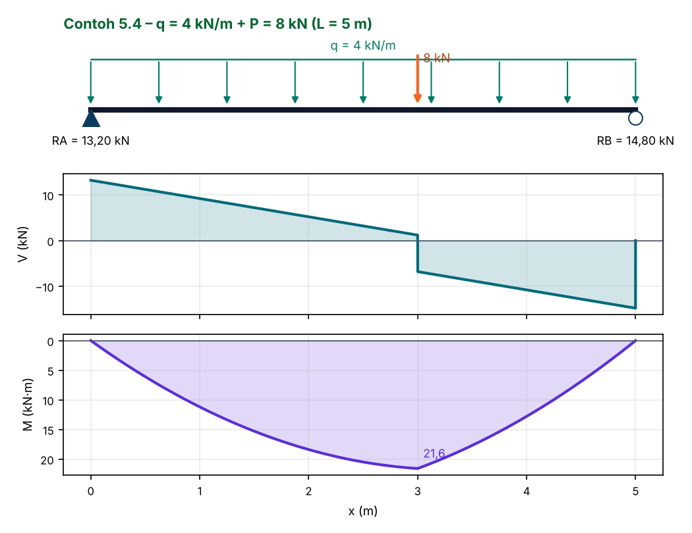
Gambar 5.2. DBB, SFD, dan BMD Contoh 5.4 (dihitung dan digambar dari alat hitung; momen positif di bawah sumbu).
Pada kantilever yang dijepit di kiri, semua momen bernilai negatif (balok melengkung cembung ke atas, tarik di atas) dan terbesar di jepit.
Keterangan: x diukur dari jepit (m). V = P (konstan) untuk beban titik; V = q(L – x) untuk beban merata.
Enam contoh: 5.1–5.2 (metode potongan dan NFD), 5.3–5.4 (balok sederhana), 5.5–5.6 (kantilever). Semua diperiksa dari dua arah atau dengan luas SFD.
Kartu prompt AI Tutor (salin ke chatbot)
Bab ini memakai grafik interaktif 2D (bukan AR) sesuai rancangan Tahap 1: penggeser posisi beban titik dan besar beban merata langsung mengubah SFD dan BMD. Cadangan cetak: Gambar 5.2. Opsional: model AR balok beton dengan pola retak lentur dan geser (ar-bab05-retak.glb ≤ 5 MB) untuk mengaitkan diagram dengan retak nyata.
Zona AR (model 3D) – versi interaktif
Pindai kode QR untuk membuka e-book interaktif di SPADA PNP, lalu buka Gaya Dalam Balok: NFD, SFD, BMD.
| Aspek | Spesifikasi |
|---|---|
| Tujuan | Menggambar NFD, SFD, BMD balok sederhana dan kantilever untuk kombinasi beban titik, merata parsial, segitiga, trapesium, dan momen kopel |
| Rumus | \(\frac{dV}{dx}=-q;\ \frac{dM}{dx}=V;\ V,M\text{ dari metode potongan per segmen}\) |
| Input | Jenis balok; L (m; 0,5–30); daftar beban (jenis, besar, posisi, panjang); konvensi tampilan momen (positif di bawah/di atas) |
| Output | Reaksi; tabel V dan M di titik penting; Mmaks/Mmin dan lokasinya; titik V = 0; grafik SFD & BMD (Chart.js) |
| Validasi | Beban di luar bentang ditolak; jumlah beban maks. 10; pesan ramah |
| Langkah | Persamaan V(x) dan M(x) per segmen ditampilkan dengan angka |
| Fitur | Penggeser beban (interaktif), reset, salin, ekspor CSV/PDF/PNG grafik |
| Kasus uji | Input | Hasil yang diharapkan | Rujukan |
|---|---|---|---|
| 1 | L = 6; P = 12 @2 | Mmaks = 16,00 kN·m @2 m | Contoh 5.1 |
| 2 | L = 5; q = 4 penuh | Mmaks = 12,50 kN·m @2,5 m | Contoh 5.3 |
| 3 | L = 5; q = 4 penuh + P = 8 @3 | Mmaks = 21,60 kN·m @3 m; V = +1,20/–6,80 kN di x = 3 | Contoh 5.4 |
| 4 | Kantilever L = 1,5; q = 4,34; P = 1,0 @1,5 | M(0) = –6,38; M(0,75) = –1,97 kN·m | Contoh 5.6 |
Alat hitung – versi interaktif
Pindai kode QR untuk membuka e-book interaktif di SPADA PNP, lalu buka Gaya Dalam Balok: NFD, SFD, BMD.
Di studio, setiap kelompok membuat lembar hitung (spreadsheet) SFD/BMD untuk balok lantai kelas: bentang 4 m, beban merata 9 kN/m, dan beban titik lemari arsip 6 kN yang dapat dipindah. Lembar hitung harus menampilkan V dan M tiap 0,25 m.
Di posisi mana lemari menghasilkan momen terbesar? Berapa nilainya?
Cocokkan hasil lembar hitung dengan Alat Hitung (selisih ≤ 1%).
Tulis satu saran penempatan lemari arsip kepada pengelola gedung.
Kunci dosen: di tengah bentang: M = 9 × 16 ÷ 8 + 6 × 4 ÷ 4 = 18 + 6 = 24 kN·m. Saran: letakkan lemari berat dekat tumpuan (dinding/balok induk).
Info Penting di 5.1; Tips Lapangan di 5.3; Peringatan K3 di 5.5.
Gaya dalam: N (tarik +), V (gaya kiri ke atas +), M (tarik bawah +).
Metode potongan: DBB bagian kiri → ΣFx, ΣFy, ΣM.
dV/dx = –q dan dM/dx = V: SFD miring karena beban merata, meloncat karena beban titik; Mmaks di V = 0 atau saat V berganti tanda.
Rumus cepat: PL/4, Pab/L, qL²/8 (balok sederhana); –PL, –qL²/2 di jepit (kantilever).
BMD menunjukkan sisi tarik → letak tulangan utama.
Singkatan BMD berarti …
Jodohkan beban segmen (1) q = 0 (2) q konstan (3) beban titik dengan bentuk SFD (A) miring lurus (B) loncatan (C) datar
Momen maksimum terjadi di titik gaya lintang sama dengan nol atau berganti tanda.
Balok sederhana 8 m, P = 16 kN di tengah. Mmaks = … kN·m
Balok sederhana 6 m, q = 5 kN/m penuh. Mmaks = … kN·m
Balok sederhana 5 m, P = 10 kN di 2 m dari A. Mmaks = … kN·m
Kantilever 3 m, q = 2 kN/m. M di jepit = … kN·m
Balok sederhana 5 m, q = 4 kN/m. V di x = 1 m = … kN
SFD sebuah balok berbentuk garis lurus miring tanpa loncatan di tengah. Bebannya …
Luas SFD dari A sampai titik V = 0 adalah 15 kN·m dan MA = 0. Mmaks = … kN·m
Dina menggambar BMD kanopi kantilever dengan momen positif terbesar di ujung bebas. Penilaian …
Rancang letak dua lemari (masing-masing 6 kN) pada balok sederhana 4 m (q = 9 kN/m) agar Mmaks ≤ 26 kN·m. Buktikan dengan hitungan.
Jawaban: ________________________Saya dapat menjelaskan N, V, M dan tandanya. 1 2 3 4 5
Saya dapat memakai metode potongan. 1 2 3 4 5
Saya dapat menggambar SFD/BMD dengan hubungan q–V–M. 1 2 3 4 5
Saya dapat menentukan Mmaks dan lokasinya. 1 2 3 4 5
Apa yang sudah/belum saya pahami? • Tindak lanjut: skor ≤ 3 → gambar ulang Contoh 5.4 tanpa melihat, lalu cocokkan dengan Generator SFD & BMD.
| Istilah | Arti |
|---|---|
| BMD | Diagram momen lentur sepanjang balok. |
| Gaya lintang (V) | Gaya dalam yang menggeser penampang. |
| Gaya normal (N) | Gaya dalam searah sumbu batang (tarik/tekan). |
| Metode potongan | Cara menghitung gaya dalam dengan DBB sebagian struktur. |
| Momen lentur (M) | Gaya dalam yang melenturkan balok. |
| SFD / NFD | Diagram gaya lintang / gaya normal. |
Hibbeler, R. C. (2024b). Structural analysis (11th ed.). Pearson. (Bab 4)
Hibbeler, R. C. (2024a). Engineering mechanics: Statics (15th ed., SI units). Pearson. (Bab 7)
Leet, K. M., Uang, C.-M., Lanning, J. T., & Gilbert, A. M. (2018). Fundamentals of structural analysis (5th ed.). McGraw-Hill. (Bab 5)
Minggu 6 • Sub-CPMK 2.3 • CPMK-2 • CPL 2 / IK 2.2 • Case Method 2 (bobot 9%) • Estimasi belajar: 120 menit mandiri + 220 menit kelas/studio
Sub-CPMK 2.3: Mahasiswa mampu mengevaluasi balok overhang dengan beban tambahan.
| Kode | Indikator | Level Bloom |
|---|---|---|
| 2.3.a | Menghitung reaksi dan gaya dalam balok overhang | C3 – menghitung |
| 2.3.b | Menghitung gaya dalam akibat beban segitiga dan trapesium | C3 – menghitung |
| 2.3.c | Menentukan momen maksimum positif, momen negatif di tumpuan, dan titik momen nol | C4 – menganalisis |
| 2.3.d | Membandingkan beberapa opsi penempatan beban berdasarkan diagram momen | C4 – membandingkan |
| 2.3.e | Memutuskan dan mempertahankan rekomendasi teknis (Case Method 2) | C5 – mengevaluasi |
Kriteria (RPS): keputusan didukung perhitungan momen maksimum dan lokasi titik balik (titik momen nol).
SFD/BMD (Bab 5) → (6.1) balok overhang: momen negatif di tumpuan + positif di bentang
Beban terdistribusi (Bab 2) → (6.2) beban segitiga dan trapesium: V parabola, M kubik
BMD → (6.3) Mmaks, momen tumpuan, titik momen nol
Semua → (6.4) Case Method 2: tandon 1.000 L di balok ruko → Bab 7 (balok Gerber)
Kasus nyata: Pemilik ruko dua lantai di Padang ingin menambah tandon air 1.000 liter di lantai 2 karena tekanan air PDAM lemah. Ia bertanya kepada tukang: “Tandon ditaruh di mana saja boleh, kan? Toh lantainya beton.”
Pertanyaan pemantik: Apakah letak tandon (di tengah ruangan, di teras yang menjorok, atau di dekat kolom) berpengaruh? Mengapa?
Gambar 6.1. Ruko dengan teras menjorok dan rencana letak tandon (ilustrasi baru, sumber: dokumen penulis)
Teks alternatif: Potongan ruko dua lantai: balok lantai 2 di atas dua kolom dengan teras menjorok 1,5 m ke depan; tiga posisi tandon alternatif ditandai A, B, C.
Prompt gambar: Cross-section illustration of a two-storey Indonesian shophouse (ruko) with a second-floor beam on two columns and a 1.5 m cantilevered front balcony, three alternative water tank positions highlighted with glowing orange markers, technical educational style, navy background, no text
Balok overhang (balok dengan ujung menggantung) adalah balok sendi–rol yang salah satu atau kedua ujungnya menjorok melewati tumpuan – misalnya balok teras ruko atau balok kanopi yang ditumpu kolom. Ciri utamanya: momen negatif di tumpuan dekat bagian menjorok dan momen positif di bentang.
Di antara kedua daerah itu terdapat titik momen nol (sering disebut titik balik). Titik ini penting di lapangan karena menjadi acuan sambungan/penghentian tulangan.
Keterangan: M_B = momen di tumpuan dekat overhang (kN·m); a = panjang overhang (m); q = beban merata pada overhang (kN/m); P_ujung = beban titik di ujung overhang (kN). Batasan: hanya bagian overhang yang dihitung (dari kanan potongan).

Gambar 6.2. SFD dan BMD balok overhang Contoh 6.1.
Beban segitiga muncul dari tekanan tanah/air atau pembagian beban pelat ke balok (metode amplop). Beban trapesium adalah gabungan beban merata dan segitiga.
Keterangan: q = intensitas maksimum di ujung B (kN/m); x diukur dari ujung beban nol (A). Batasan: khusus beban segitiga penuh pada balok sederhana.
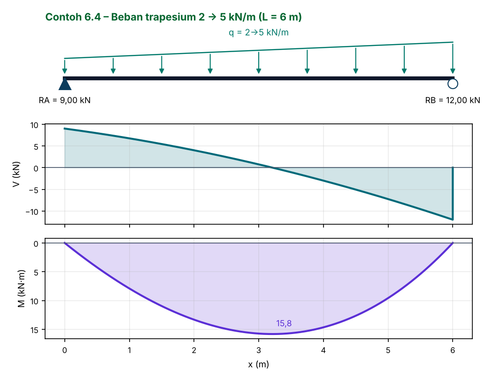
Gambar 6.3. SFD dan BMD beban trapesium Contoh 6.4.
Mmaks positif: cari x saat V = 0 di bentang, atau titik saat V berganti tanda karena beban titik.
Momen negatif: hitung di tumpuan dekat overhang dari sisi overhang.
Titik momen nol: selesaikan M(x) = 0 di bentang.
Bandingkan |Mmaks positif| dan |M negatif|: yang lebih besar menentukan kebutuhan tulangan bawah/atas.
Peran: kelompok sebagai konsultan yang harus memberi keputusan kepada pemilik ruko. Waktu: 70 menit + presentasi 5 menit. Bobot: 9% (CPMK-2), rubrik Case Method RPS.
Data kasus (disederhanakan untuk pembelajaran): balok lantai 2: sendi A (x = 0), rol B di kolom depan (x = 5 m), teras menjorok BC = 1,5 m. Beban merata eksisting q = 12 kN/m (pelat, finishing, dinding ringan, beban hidup). Tandon 1.000 L + tandon kosong = 10,2 kN (beban titik). Dari dokumen perencanaan lama, kapasitas momen izin balok: lapangan 40 kN·m dan tumpuan B 30 kN·m (angka data kasus, bukan nilai standar).
Tugas kelompok:
Hitung reaksi, Mmaks lapangan, dan M_B untuk kondisi tanpa tandon.
Hitung kembali untuk tiga opsi: A – tandon di tengah bentang (x = 2,5 m); B – di ujung teras (x = 6,5 m); C – tepat di atas kolom B (x = 5 m).
Gambarkan SFD dan BMD tiap opsi (boleh dengan Alat Hitung) dan bandingkan dengan kapasitas izin.
Putuskan opsi terbaik dan tuliskan alasan (keamanan, biaya, kemudahan pelaksanaan).
Presentasikan; jawab pertanyaan “Bagaimana jika pemilik tetap ingin di teras?”
| Kondisi | RA (kN) | RB (kN) | Mmaks lapangan (kN·m) | M_B (kN·m) | Terhadap izin 40 / 30 |
|---|---|---|---|---|---|
| Tanpa tandon | 27,30 | 50,70 | 31,05 @2,28 m | –13,50 | Aman / aman |
| Opsi A – tengah bentang | 32,40 | 55,80 | 43,50 @2,50 m | –13,50 | **Melebihi** lapangan / aman |
| Opsi B – ujung teras | 24,24 | 63,96 | 24,48 @2,02 m | –28,80 | Aman / **hampir batas** (96%) |
| Opsi C – di atas kolom B | 27,30 | 60,90 | 31,05 @2,28 m | –13,50 | Aman / aman |
Tabel di atas adalah kunci dosen (dihitung ulang secara numerik); pada versi mahasiswa tabel ini kosong.

Gambar 6.4. Opsi A – tandon di tengah bentang: momen lapangan naik menjadi 43,5 kN·m.

Gambar 6.5. Opsi B – tandon di ujung teras: momen tumpuan B naik menjadi –28,8 kN·m.

Gambar 6.6. Opsi C – tandon di atas kolom B: momen tidak berubah, beban langsung ke kolom.
Kunci keputusan: Opsi C terbaik – beban langsung diterima kolom, momen balok tidak bertambah (RB naik 10,2 kN; kolom dan fondasi perlu dicek di mata kuliah lanjut). Opsi A ditolak karena melampaui kapasitas lapangan (43,5 > 40). Opsi B tidak dianjurkan karena margin tipis (28,8/30 = 96%) dan teras menjorok rawan beban tambahan (orang, pot bunga).
Empat contoh (6.1–6.4) ditambah tabel perbandingan Case Method 2. Semua nilai diperiksa dengan perhitungan numerik.
Kartu prompt AI Tutor (salin ke chatbot)
| Aspek | Spesifikasi |
|---|---|
| Nama objek | ar-bab06-ruko-tandon.glb (+ .usdz) |
| Tujuan belajar | Melihat pengaruh letak tandon terhadap lendutan dan momen balok overhang (indikator 2.3.d) |
| Pembuatan model | Revit: potongan ruko 2 lantai (balok, kolom, teras 1,5 m, tandon); Blender: animasi tandon pindah posisi; GLB ≤ 9 MB |
| Hotspot & label | (1) Kolom A dan B; (2) Teras overhang; (3) Posisi tandon A/B/C; (4) Zona momen positif (tarik bawah) dan negatif (tarik atas); (5) Titik momen nol |
| Animasi | Tombol A/B/C memindahkan tandon; lendutan dibesarkan visual dan label Mmaks/M_B berubah |
| Kode QR | Menuju ar/bab-06.html |
| Cadangan | Gambar 6.4–6.6 dan video rotasi |
| Pertanyaan pengamatan | (a) Opsi mana yang membuat teras melendut paling besar? (b) Di mana titik momen nol berpindah saat tandon di teras? (c) Mengapa opsi C “tidak mengubah” diagram momen? |
Zona AR (model 3D) – versi interaktif
Pindai kode QR untuk membuka e-book interaktif di SPADA PNP, lalu buka Balok Overhang, Beban Segitiga & Trapesium.
| Aspek | Spesifikasi |
|---|---|
| Tujuan | Reaksi, SFD, BMD, Mmaks, M tumpuan, titik momen nol untuk balok overhang satu/dua sisi dengan beban titik, merata parsial, segitiga, trapesium |
| Rumus | \(\frac{dV}{dx}=-q;\ \frac{dM}{dx}=V;\ M(x_0)=0\ \text{(akar dicari numerik)}\) |
| Input | Posisi tumpuan A dan B (m), panjang total (m; ≤ 30); beban seperti Bab 5; kapasitas izin (opsional) untuk perbandingan |
| Output | RA, RB; Mmaks+ dan lokasinya; M di tiap tumpuan; titik momen nol; rasio terhadap kapasitas izin dengan warna hijau/kuning/merah |
| Mode Case Method | Tombol “Bandingkan opsi”: hingga 4 skenario berdampingan (tabel + grafik) |
| Validasi & fitur | Tumpuan harus di dalam panjang balok; peringatan bila RA < 0 (“Tumpuan A terangkat – periksa angkur”); reset; salin; ekspor CSV/PDF |
| Kasus uji | Input | Hasil yang diharapkan | Rujukan |
|---|---|---|---|
| 1 | L = 8; A = 0; B = 6; q = 5 penuh | RA = 13,33; RB = 26,67; M+ = 17,78 @2,67; M_B = –10,00; nol @5,33 | Contoh 6.1 |
| 2 | L = 5,5; A = 0; B = 4; q = 3 (0–4); P = 6 @5,5 | RA = 3,75; RB = 14,25; M+ = 2,34; M_B = –9,00 | Contoh 6.2 |
| 3 | L = 6; trapesium 2 → 5 | RA = 9,00; RB = 12,00; Mmaks = 15,83 @3,21 | Contoh 6.4 |
| 4 | Ruko opsi B: L = 6,5; B = 5; q = 12; P = 10,2 @6,5 | RA = 24,24; M+ = 24,48; M_B = –28,80 | Case Method 2 |
Alat hitung – versi interaktif
Pindai kode QR untuk membuka e-book interaktif di SPADA PNP, lalu buka Balok Overhang, Beban Segitiga & Trapesium.
Case Method 2 disajikan lengkap di subbab 6.4.
Ketiga kotak ada di subbab 6.3.
Balok overhang: momen negatif di tumpuan dekat overhang, positif di bentang, dipisah titik momen nol.
Beban di ujung overhang menurunkan momen lapangan tetapi menaikkan momen tumpuan; RA bisa menjadi negatif.
Beban segitiga penuh: RA = qL/6, RB = qL/3, Mmaks = qL²/(9√3) di x = L/√3; trapesium = persegi panjang + segitiga.
Mmaks dicari di V = 0; titik momen nol dari M(x) = 0.
Keputusan teknis harus membandingkan beberapa opsi terhadap kapasitas, bukan hanya satu angka.
Balok overhang adalah …
Pada balok overhang, momen di tumpuan dekat overhang bernilai negatif.
Overhang 2 m dengan q = 6 kN/m (tanpa beban titik). M_B = … kN·m
Overhang 1,5 m dengan beban titik 8 kN di ujung. M_B = … kN·m
Balok sederhana 9 m, beban segitiga 0 → 6 kN/m. RA = … kN; RB = … kN
Soal no. 5: lokasi Mmaks dari A = … m
Trapesium 3 → 6 kN/m pada balok 4 m: resultan total = … kN
Contoh 6.1: jika overhang diperpanjang menjadi 3 m (beban tetap 5 kN/m), M_B = … kN·m
Menambah beban di ujung overhang menyebabkan …
Pemilik ruko ingin tandon di tengah ruangan (Opsi A). Tanggapan konsultan yang tepat …
Pemilik tetap ingin tandon di teras. Rancang satu solusi struktural sederhana dan jelaskan pengaruhnya pada diagram momen.
Jawaban: ________________________Saya dapat menghitung reaksi balok overhang. 1 2 3 4 5
Saya dapat mencari Mmaks, M tumpuan, dan titik momen nol. 1 2 3 4 5
Saya dapat menghitung beban segitiga dan trapesium. 1 2 3 4 5
Saya dapat mempertahankan keputusan teknis dengan data. 1 2 3 4 5
Apa yang sudah/belum saya pahami? • Tindak lanjut: skor ≤ 3 → ulangi Contoh 6.1 dan 6.2 dengan Alat Hitung mode “Bandingkan opsi”.
| Istilah | Arti |
|---|---|
| Balok overhang | Balok sendi–rol dengan ujung menjorok melewati tumpuan. |
| Beban trapesium | Beban terdistribusi yang intensitasnya berubah linear tetapi tidak dimulai dari nol. |
| Kapasitas momen izin | Momen terbesar yang boleh dipikul penampang (dibahas rinci di Struktur Beton I). |
| Momen negatif | Momen yang membuat tarik di sisi atas balok. |
| Titik momen nol | Titik di mana momen lentur berganti tanda (titik balik). |
Hibbeler, R. C. (2024b). Structural analysis (11th ed.). Pearson. (Bab 4)
Hibbeler, R. C. (2024a). Engineering mechanics: Statics (15th ed., SI units). Pearson. (Bab 7)
Badan Standardisasi Nasional. (2020). SNI 1727:2020 Beban desain minimum dan kriteria terkait untuk bangunan gedung dan struktur lain. BSN.
Minggu 7 • Sub-CPMK 3.1 • CPMK-3 • CPL 2 / IK 2.2 • Estimasi belajar: 120 menit mandiri + 220 menit kelas/studio (studio: verifikasi dengan spreadsheet; tutor sebaya)
Sub-CPMK 3.1: Mahasiswa mampu menganalisis balok Gerber.
| Kode | Indikator | Level Bloom |
|---|---|---|
| 3.1.a | Menjelaskan fungsi sendi dalam dan syarat balok Gerber statis tertentu | C2 – menjelaskan |
| 3.1.b | Memisahkan balok Gerber menjadi balok induk dan balok anak | C4 – menguraikan |
| 3.1.c | Menghitung reaksi dan gaya yang diteruskan di sendi dalam | C3 – menghitung |
| 3.1.d | Menggambar SFD dan BMD balok Gerber dengan M = 0 di sendi | C3–C4 |
| 3.1.e | Memverifikasi hasil hitung manual dengan lembar hitung (spreadsheet) | C3/P3 – memverifikasi |
Kriteria (RPS): pemisahan balok induk–anak dan diagram gaya dalam benar.
Statis tertentu (Bab 3) → (7.1) sendi dalam memberi persamaan tambahan M = 0
Sendi dalam → (7.2) balok anak (bertumpu) dan balok induk (menumpu)
Urutan hitung → anak dulu → reaksinya menjadi beban induk
Diagram → (7.3) SFD/BMD gabungan, M = 0 di sendi
Verifikasi → (7.4) spreadsheet → Bab 8 (portal)
Pertanyaan pemantik: Jembatan panjang di atas sungai sering terdiri atas beberapa bentang. Jika satu pilar sedikit turun karena tanah lunak, mengapa jembatan balok menerus bisa retak, sedangkan jembatan dengan sendi di beberapa titik lebih “tenang”?
Sejarah singkat: Balok dengan sendi dalam dikenal sebagai balok Gerber, dinamai menurut insinyur Jerman Heinrich Gerber (abad ke-19). Prinsip yang sama dipakai jembatan kantilever terkenal, seperti Jembatan Forth di Skotlandia.
Gambar 7.1. Jembatan dengan sendi dalam (ilustrasi baru, sumber: dokumen penulis)
Teks alternatif: Jembatan tiga bentang: dua bentang tepi menjorok sebagai kantilever, bentang tengah pendek digantung di antara ujung kantilever pada dua sendi.
Prompt gambar: Educational illustration of a three-span Gerber (cantilever) bridge over a river in West Sumatra, two anchor spans with cantilever arms supporting a short suspended span on two internal hinges highlighted with glowing orange circles, technical style, navy background, no text
Sendi dalam adalah sambungan di tengah balok yang dapat meneruskan gaya (vertikal dan horizontal) tetapi tidak dapat meneruskan momen. Karena itu, momen di sendi dalam selalu nol, dan setiap sendi dalam memberi satu persamaan tambahan: ΣM = 0 terhadap sendi untuk salah satu bagian balok.
Keterangan: r = jumlah reaksi tumpuan; h = jumlah sendi dalam. Batasan: struktur juga harus stabil – susunan sendi dan tumpuan tidak boleh membentuk mekanisme (lihat 7.2).
Kunci analisis balok Gerber adalah melihat siapa menumpu siapa:
Balok anak (suspended span) – bagian yang tidak stabil sendiri; ia “menumpang” pada ujung balok lain melalui sendi dalam. Dihitung lebih dulu sebagai balok sederhana.
Balok induk – bagian yang stabil sendiri (punya cukup tumpuan, sering dengan overhang). Reaksi balok anak di sendi diberikan kepadanya sebagai beban titik berlawanan arah.
Analogi: papan jembatan kecil (anak) yang diletakkan di ujung dua papan kantilever (induk) – papan kecil hanya “menitipkan” bebannya kepada induk.
Tentukan bagian yang stabil sendiri (induk) dan yang tidak (anak).
Hitung reaksi balok anak sebagai balok sederhana di atas sendi dalam.
Pindahkan reaksi anak sebagai beban titik ke balok induk (arah berlawanan).
Hitung reaksi balok induk (Bab 4) dan gaya dalamnya (Bab 5–6).
Gabungkan diagram; periksa M = 0 di setiap sendi dalam dan ΣFy seluruh balok.
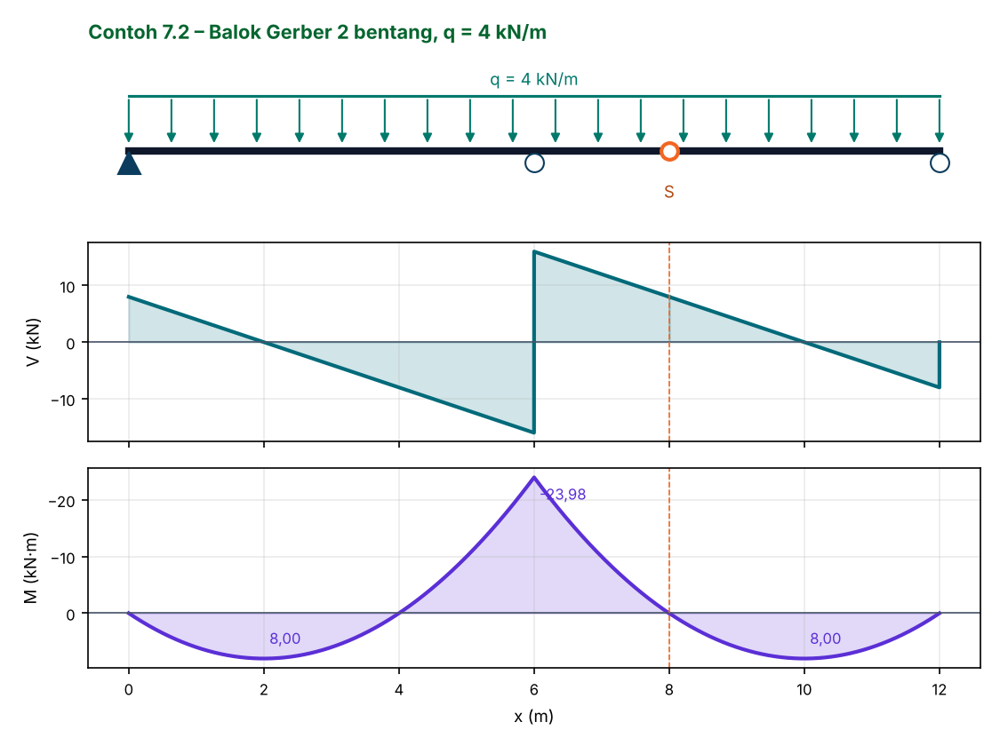
Gambar 7.2. SFD dan BMD balok Gerber Contoh 7.2 (garis putus oranye = sendi dalam, M = 0).
Ciri diagram balok Gerber: BMD selalu melewati nol di sendi dalam; SFD menerus (tidak meloncat) di sendi kecuali ada beban titik tepat di sendi; momen negatif muncul di tumpuan yang memikul ujung kantilever balok induk.
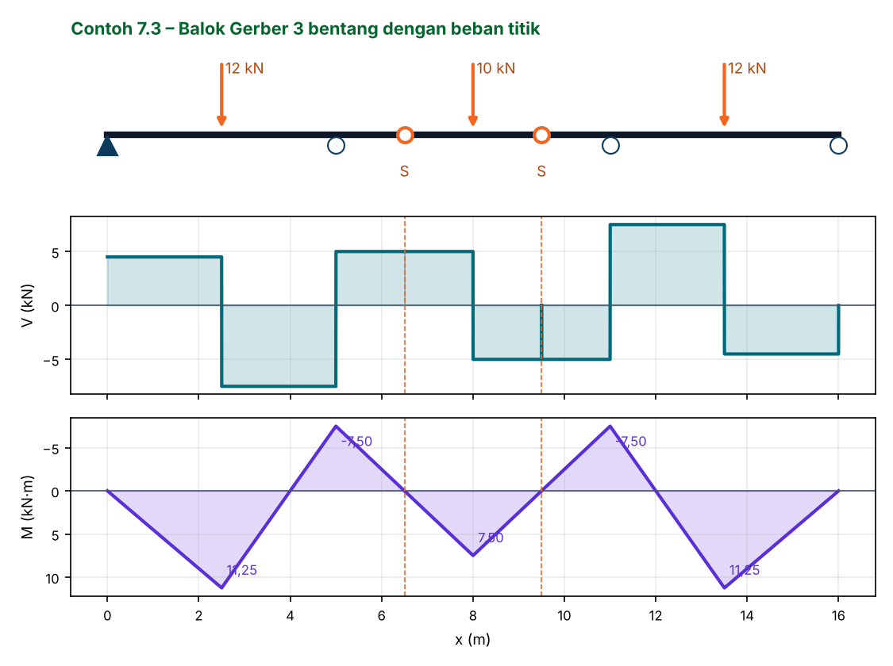
Gambar 7.3. SFD dan BMD balok Gerber tiga bentang Contoh 7.3.
Di studio, hasil manual diverifikasi dengan lembar hitung sederhana. Susunan kolom yang dianjurkan:
| Kolom | Isi | Contoh rumus (Excel/Google Sheets) |
|---|---|---|
| A | x (m), langkah 0,25 m | =A2+0,25 |
| B | Bagian (induk/anak) | =IF(A3<=8;"induk";"anak") |
| C | V(x) per segmen | induk: =8-4*A3+IF(A3>=6;32;0) |
| D | M(x) per segmen | induk: =8*A3-2*A3^2+IF(A3>=6;32*(A3-6);0) |
| E | Cek M di sendi | =ABS(D(x=8))<0,01 → “OK” |
Kriteria lulus verifikasi: selisih nilai ekstrem manual vs lembar hitung ≤ 1% dan M di sendi dalam = 0. Hasil lembar hitung juga dapat dibandingkan dengan Alat Hitung Gerber e-book atau Ftool.
Tiga contoh (7.1 klasifikasi, 7.2 dua bentang, 7.3 tiga bentang) dengan diagram dari hasil hitungan, ditambah contoh susunan lembar hitung di 7.4.
Kartu prompt AI Tutor (salin ke chatbot)
| Aspek | Spesifikasi |
|---|---|
| Nama objek | ar-bab07-gerber.glb (+ .usdz) |
| Tujuan belajar | Melihat bagaimana balok anak menumpang pada kantilever balok induk dan mengapa momen di sendi nol (indikator 3.1.a–b) |
| Pembuatan model | Blender: balok Gerber 3 bentang skala kecil (mirip Contoh 7.3) dengan detail sendi berupa pin dan pelat; GLB ≤ 7 MB |
| Hotspot & label | (1) Balok induk kiri/kanan; (2) Balok anak; (3) Sendi dalam S₁, S₂ (zoom detail pin); (4) Reaksi tumpuan; (5) Zona momen negatif di B dan C |
| Animasi | Tombol “Pisahkan”: balok anak terangkat, panah RS muncul sebagai beban pada induk; tombol “Gabungkan” |
| Kode QR | Menuju ar/bab-07.html |
| Cadangan | Gambar 7.2–7.3 dan animasi 2D |
| Pertanyaan pengamatan | (a) Bagian mana yang tetap berdiri jika balok anak diangkat? (b) Mengapa sendi tidak menahan momen? (c) Di mana momen negatif terbesar? |
Zona AR (model 3D) – versi interaktif
Pindai kode QR untuk membuka e-book interaktif di SPADA PNP, lalu buka Balok Gerber.
| Aspek | Spesifikasi |
|---|---|
| Tujuan | Analisis balok Gerber 2–3 bentang: klasifikasi (r = 3 + h), pemisahan induk–anak otomatis, reaksi, gaya di sendi, SFD, BMD |
| Rumus | \(r=3+h;\ M_{sendi}=0;\ \text{anak} \rightarrow \text{induk (beban } R_S)\) |
| Input | Posisi tumpuan (jenis + x), posisi sendi dalam (x), beban (titik/merata/segitiga); panjang total ≤ 40 m |
| Output | Status stabil/labil/statis tertentu; urutan hitung (anak → induk); RA…RD; RS; Mmaks per bentang; M tumpuan; diagram dengan tanda sendi |
| Validasi | Peringatan “Struktur labil: bagian antara dua sendi tanpa tumpuan” bila mekanisme terdeteksi |
| Langkah & fitur | Diagram pemisahan (animasi), tabel langkah, ekspor CSV untuk dibandingkan dengan spreadsheet; reset; salin; PDF |
| Kasus uji | Input | Hasil yang diharapkan | Rujukan |
|---|---|---|---|
| 1 | A0 sendi, B6 rol, S8, C12 rol; q = 4 penuh | RA = 8; RB = 32; RC = 8 kN; M_B = –24; Mmaks = 8 kN·m | Contoh 7.2 |
| 2 | A0, B5, S6,5, S9,5, C11, D16; P 12@2,5; 10@8; 12@13,5 | RA = RD = 4,5; RB = RC = 12,5 kN; M = 11,25 / 7,50 / –7,50 | Contoh 7.3 |
| 3 | Sendi A, rol B, dua sendi dalam di AB | Status: labil | Contoh 7.1(c) |
Alat hitung – versi interaktif
Pindai kode QR untuk membuka e-book interaktif di SPADA PNP, lalu buka Balok Gerber.
Jembatan kayu–baja desa di atas irigasi direncanakan tiga bentang seperti Contoh 7.3. Warga ingin truk kecil (beban titik 30 kN) dapat lewat. Kelompok diminta menentukan posisi truk yang menghasilkan momen lapangan terbesar pada balok anak dan pada balok induk.
Hitung momen balok anak jika truk tepat di tengah bentang anak.
Hitung momen lapangan balok induk jika truk di tengah bentang AB.
Mana yang lebih kritis? Usulkan satu langkah pengamanan (rambu batas beban, perkuatan).
Kunci dosen (hanya beban truk): anak: 30 × 3 ÷ 4 = 22,50 kN·m; induk AB (bentang 5 m, P di tengah): 30 × 5 ÷ 4 = 37,50 kN·m → bentang induk lebih kritis. Rambu batas beban dan pemeriksaan sambungan sendi wajib.
Info Penting di 7.3; Tips Lapangan dan Peringatan K3 di 7.4.
Sendi dalam meneruskan gaya tetapi tidak momen: M = 0 di sendi.
Statis tertentu bila r = 3 + h dan stabil.
Hitung balok anak dulu, lalu beri reaksinya sebagai beban pada balok induk.
BMD melewati nol di sendi; momen negatif muncul di tumpuan yang memikul kantilever induk.
Verifikasi dengan spreadsheet/Alat Hitung: selisih ≤ 1%, M sendi = 0.
Sendi dalam tidak dapat meneruskan …
Balok anak dihitung setelah balok induk.
Syarat statis tertentu balok dengan h sendi dalam …
Balok dengan 2 sendi dalam perlu … reaksi agar statis tertentu
Balok anak 4 m, beban titik 12 kN di tengah. Gaya di tiap sendi = … kN
Induk A–B dengan overhang 2 m menerima beban 6 kN dari anak di ujung overhang (tanpa beban lain di overhang). M_B = … kN·m
Contoh 7.2 dengan q = 5 kN/m: RC = … kN
Struktur: sendi A, rol B, sendi dalam S di bentang AB. Struktur ini …
Contoh 7.2: lokasi momen nol pada bentang AB (selain di A) = … m
Lembar hitung Fajar menunjukkan M di sendi = 3,2 kN·m. Kesimpulan terbaik …
Rancang letak satu sendi dalam pada balok menerus di atas 3 tumpuan (A sendi, B rol, C rol; AB = BC = 6 m) agar struktur menjadi statis tertentu dan momen di B kecil. Jelaskan dengan DBB.
Jawaban: ________________________Saya dapat menjelaskan sendi dalam dan r = 3 + h. 1 2 3 4 5
Saya dapat memisahkan balok induk dan anak. 1 2 3 4 5
Saya dapat menggambar SFD/BMD balok Gerber. 1 2 3 4 5
Saya dapat memverifikasi dengan spreadsheet. 1 2 3 4 5
Apa yang sudah/belum saya pahami? • Tindak lanjut: skor ≤ 3 → minta tutor sebaya menjelaskan pemisahan Contoh 7.3, lalu ulangi dengan Alat Hitung Gerber.
| Istilah | Arti |
|---|---|
| Balok anak | Bagian balok Gerber yang menumpang pada balok lain melalui sendi dalam. |
| Balok Gerber | Balok menerus yang dibuat statis tertentu dengan sendi dalam. |
| Balok induk | Bagian yang stabil sendiri dan menumpu balok anak. |
| Mekanisme | Susunan yang dapat bergerak (labil). |
| Sendi dalam | Sambungan di dalam balok dengan momen nol. |
Hibbeler, R. C. (2024b). Structural analysis (11th ed.). Pearson. (Bab 2 dan 4)
Leet, K. M., Uang, C.-M., Lanning, J. T., & Gilbert, A. M. (2018). Fundamentals of structural analysis (5th ed.). McGraw-Hill. (Bab 3 dan 5)
Minggu 8 • UTS berbasis kasus • CPMK-1 (4%) dan CPMK-2 (8%) = 12% nilai akhir • Ujian tertulis 100 menit • Ambang tuntas CPMK ≥ 70
| CPMK / Sub-CPMK | Indikator yang diukur | Level | Nomor soal | Bobot dalam UTS |
|---|---|---|---|---|
| CPMK-1 / 1.1 | Satuan, berat, komponen dan resultan gaya | C2–C3 | A1–A3 | 9% |
| CPMK-1 / 1.2 | Momen dan resultan beban terdistribusi | C3 | A4–A5 | 6% |
| CPMK-1 / 1.3 | Tumpuan, DBB, kesetimbangan titik, klasifikasi | C2–C4 | A6–A7, B1 | 18% |
| CPMK-2 / 2.1 | Reaksi balok sederhana dan kantilever | C3 | A8–A9 | 6% |
| CPMK-2 / 2.2 | SFD dan BMD balok sederhana | C3–C4 | A10, B2 | 28% |
| CPMK-2 / 2.3 | Balok overhang dan keputusan teknis | C4–C5 | B3 | 33% |
| Jumlah | 10 + 3 soal | 100 poin: CPMK-1 = 33, CPMK-2 = 67 (= 4% dan 8% nilai akhir) |
Pembagian poin mengikuti proporsi RPS: CPMK-1 = 4/12 (±33%) dan CPMK-2 = 8/12 (±67%).
Satu zak semen 25 kg. Beratnya = … kN
F = 8 kN membentuk 40° dari horizontal ke kanan-atas. Fx = … ; Fy = … kN
Dua gaya 5 kN dan 12 kN saling tegak lurus. R = … kN
Gaya vertikal 6 kN bekerja 2,5 m (horizontal) dari titik O. M_O = … kN·m
Beban segitiga 0 → 8 kN/m sepanjang 3 m. R = … kN, letak … m dari ujung nol
Jumlah reaksi tumpuan jepit pada struktur bidang …
Balok di atas sendi, rol, dan rol (tanpa sendi dalam) adalah …
Balok sederhana 6 m, beban 9 kN di 2 m dari A. RA = … ; RB = … kN
Kantilever 2,5 m dengan q = 4 kN/m. MA = … kN·m
Balok sederhana 6 m, q = 3 kN/m penuh. Mmaks = … kN·m
Kasus B1 – Papan nama gantung di lobi kampus (12 poin, CPMK-1, C3–C4). Papan nama seberat 0,9 kN digantung di titik C oleh kabel CA (30° terhadap horizontal, ke kiri-atas) dan kabel CB (60° terhadap horizontal, ke kanan-atas). (a) Gambar DBB titik C. (b) Hitung gaya tiap kabel. (c) Kabel mana yang harus lebih kuat? Jelaskan.
Kasus B2 – Balok lantai gudang alat (25 poin, CPMK-2, C3–C4). Balok sederhana 6 m memikul beban merata 5 kN/m pada 0–4 m (tumpukan material) dan mesin 10 kN di x = 5 m. (a) Hitung RA dan RB. (b) Gambar SFD dan BMD dengan nilai penting. (c) Tentukan Mmaks dan lokasinya.
Kasus B3 – Balkon rumah dan pot bunga (33 poin, CPMK-2, C4–C5). Balok balkon: sendi A (x = 0), rol B (x = 4 m), menjorok BC = 1,2 m; beban merata 6 kN/m sepanjang 5,2 m. Pemilik ingin meletakkan pot bunga besar 3 kN di ujung balkon (x = 5,2 m). Menurut data kasus, kapasitas momen izin di tumpuan B adalah 7,5 kN·m. (a) Hitung RA, RB, M_B, dan Mmaks lapangan untuk kondisi tanpa dan dengan pot. (b) Bolehkah pot diletakkan di ujung? (c) Usulkan letak pot yang aman dan buktikan.
| Kasus | Kunci | Rubrik penilaian |
|---|---|---|
| B1 | ΣFx: –T₁ cos 30° + T₂ cos 60° = 0 → T₂ = 1,732 T₁. ΣFy: 0,5 T₁ + 1,732 T₁ × 0,866 = 0,9 → T₁ = 0,45 kN; T₂ = 0,78 kN. Kabel CB (lebih curam) memikul gaya lebih besar. | DBB 4 • persamaan 4 • hasil & satuan 2 • alasan 2 (= 12) |
| B2 | Resultan 5 × 4 = 20 kN @2 m. RB = (20 × 2 + 10 × 5) ÷ 6 = 15,00 kN; RA = 30 – 15 = 15,00 kN. V = 15 – 5x → 0 di x = 3 m; Mmaks = 15 × 3 – 2,5 × 9 = 22,50 kN·m. Nilai penting: V(4) = –5; V meloncat di x = 5 dari –5 ke –15; M(4) = 20,0; M(5) = 15,0. | Reaksi 7 • SFD 7 • BMD 7 • Mmaks & lokasi 4 (= 25) |
| B3 | Tanpa pot: RA = 10,92; RB = 20,28 kN; M_B = –6 × 1,2² ÷ 2 = –4,32 kN·m; Mmaks = 9,94 kN·m @1,82 m. Dengan pot di ujung: RA = 10,02; RB = 24,18 kN; M_B = –(4,32 + 3 × 1,2) = –7,92 kN·m > 7,5 → **tidak boleh**; Mmaks lapangan turun menjadi 8,37 kN·m @1,67 m. Usulan: pot di x = 4,3 m (0,3 m dari B): M_B = –(4,32 + 0,9) = –5,22 kN·m ≤ 7,5 ✓ (atau di dalam bentang AB). | Hitungan dua kondisi 14 • keputusan berbasis angka 8 • usulan & bukti 8 • komunikasi 3 (= 33) |
Skor UTS dipisah per CPMK: CPMK-1 = (A1–A7 + B1) dan CPMK-2 = (A8–A10 + B2 + B3), masing-masing dinormalkan ke skala 100 (CPMK-1: skor ÷ 33 × 100; CPMK-2: skor ÷ 67 × 100).
CPMK dinyatakan tuntas bila skor ≥ 70 (Kurikulum Bab V.D; RPS Bagian 10).
Mahasiswa yang belum tuntas mendapat umpan balik terarah dan asesmen ulang pada indikator yang belum tercapai paling lambat 2 minggu setelah nilai diumumkan (RPS Bagian 10).
E-book menampilkan peta kelemahan per Sub-CPMK dari simulasi UTS dan menyarankan bab yang perlu diulang.
| Hari | Kegiatan | Fitur e-book |
|---|---|---|
| 1 | Ulangi rangkuman Bab 1–3; kerjakan ulang Contoh 1.6, 2.7, 3.4 | Rangkuman, Alat Hitung Vektor & Momen |
| 2 | Kuis Bab 1–3 sampai skor ≥ 80 | Kuis interaktif |
| 3 | Ulangi Bab 4; kerjakan Contoh 4.3, 4.6 | Alat Hitung Reaksi |
| 4 | Ulangi Bab 5; gambar ulang SFD/BMD Contoh 5.4 tanpa melihat | Generator SFD & BMD |
| 5 | Ulangi Bab 6; diskusikan Case Method 2 | Alat Hitung Overhang, AI Tutor (mode Sokratik) |
| 6 | Simulasi UTS dengan batas waktu 100 menit | Simulasi UTS |
| 7 | Pelajari peta kelemahan; tanya tutor sebaya | Refleksi tengah semester |
Bagian mana dari Bab 1–6 yang paling saya kuasai? Buktinya?
Kesalahan apa yang paling sering saya buat (satuan, tanda, DBB, lengan momen)?
Strategi apa yang akan saya ubah untuk paruh kedua (portal, rangka batang, proyek jembatan)?
Seberapa yakin saya mencapai ≥ 70 pada CPMK-1 dan CPMK-2? 1 2 3 4 5
Minggu 9 • Sub-CPMK 3.2 • CPMK-3 • CPL 2 / IK 2.2 • Estimasi belajar: 120 menit mandiri + 220 menit kelas/studio
Sub-CPMK 3.2: Mahasiswa mampu menganalisis portal statis tertentu.
| Kode | Indikator | Level Bloom |
|---|---|---|
| 3.2.a | Menjelaskan perilaku titik kumpul kaku pada portal | C2 – menjelaskan |
| 3.2.b | Menghitung reaksi portal L (jepit) dan portal sendi–rol | C3 – menghitung |
| 3.2.c | Menghitung N, V, M tiap batang portal | C3–C4 |
| 3.2.d | Menggambar NFD, SFD, BMD portal di sisi yang benar | C4 – menganalisis |
| 3.2.e | Memeriksa kesetimbangan titik sudut | C4 – memeriksa |
Kriteria (RPS): reaksi, NFD, SFD, BMD portal L dan portal sendi–rol benar.
Balok (Bab 4–7) → (8.1) portal: balok + kolom yang disambung kaku
Titik kumpul kaku → momen diteruskan melewati sudut
Reaksi → (8.2) portal L (jepit) dan portal sendi–rol
Gaya dalam → (8.3) N, V, M per batang; BMD di sisi tarik
Pemeriksaan → (8.4) kesetimbangan titik sudut → Bab 9 (portal tiga sendi)
Diskusi gambar nyata: carport rumah dengan dua kolom baja dan balok di atasnya; gudang kecil dengan kolom dan balok beton. Saat angin kencang, mengapa kolom carport bisa miring di bagian bawah, padahal yang terkena angin adalah atapnya?
Pertanyaan pemantik: Apa bedanya kolom yang hanya “ditaruh” di bawah balok dengan kolom yang dicor menyatu dengan balok?
Gambar 8.1. Portal carport dan gudang kecil (ilustrasi baru, sumber: dokumen penulis)
Teks alternatif: Dua foto/ilustrasi: carport baja dengan kolom dan balok tersambung kaku di sudut; gudang beton satu lantai dengan portal balok–kolom; sudut kaku ditandai.
Prompt gambar: Educational illustration of two simple building frames in Indonesia: a steel carport portal frame and a small one-storey concrete warehouse frame, rigid corner joints highlighted with glowing cyan, wind arrow on the roof, technical style, navy background, no text
Portal (frame) adalah struktur yang terdiri atas balok dan kolom yang disambung kaku. Pada sambungan kaku, sudut antara balok dan kolom tidak berubah ketika struktur melentur, sehingga momen diteruskan dari balok ke kolom. Inilah perbedaan utama dengan balok di atas tumpuan.
Analogi: rangka kursi kayu yang dipaku dan dilem kuat di sudutnya. Jika sandaran didorong, kaki kursi ikut melentur karena sudutnya kaku.
Pada titik sudut tanpa momen luar, momen di ujung kolom = momen di ujung balok (besar sama, sisi tarik “berbelok” mengikuti sudut).
Gaya lintang di kolom menjadi gaya normal di balok, dan sebaliknya.
Statis tertentu bila jumlah reaksi = 3 (portal tanpa sendi dalam): portal L dengan jepit, atau portal dengan sendi dan rol.
Prosedur sama dengan balok: DBB seluruh portal → ΣFx = 0, ΣFy = 0, ΣM = 0. Perhatikan beban horizontal (angin, gempa) yang menghasilkan momen terhadap tumpuan karena bekerja di ketinggian tertentu.

Gambar 8.2. BMD portal L Contoh 8.1 (digambar di sisi tarik).
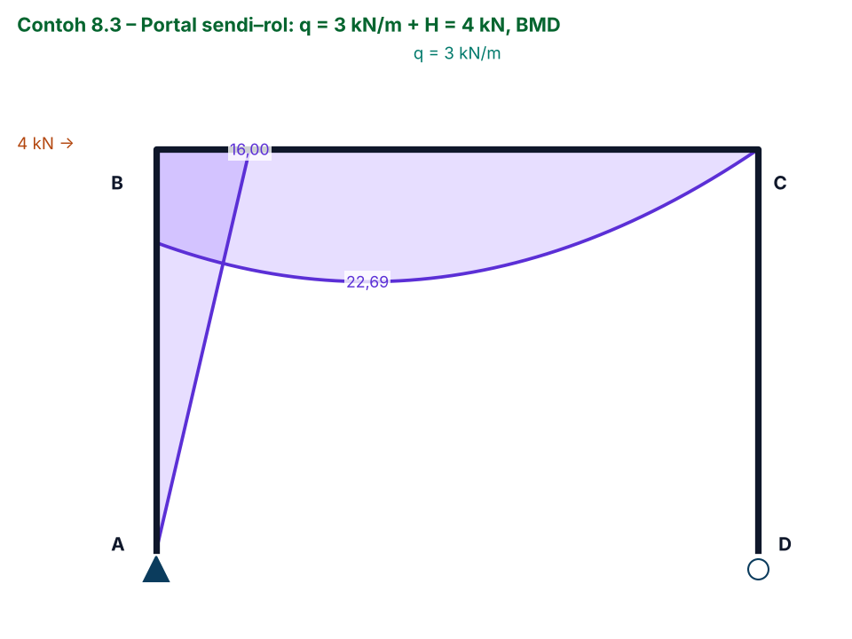
Gambar 8.3. BMD portal sendi–rol Contoh 8.3. Angin memindahkan sebagian beban ke kolom kanan dan menimbulkan momen di kolom kiri.
Hitung reaksi dan periksa.
Pilih lintasan dari satu tumpuan (misalnya A → B → C → D). Untuk tiap batang, tentukan sisi dalam (garis putus).
Potong tiap batang; pakai DBB bagian dari awal lintasan sampai potongan → N, V, M.
Gambar NFD dan SFD (nilai dan tanda), BMD di sisi tarik.
Periksa titik sudut (8.4) dan nilai di ujung lintasan (harus sesuai reaksi tumpuan akhir).
| Batang | N (kN) | V (kN) | M (kN·m) |
|---|---|---|---|
| AB (kolom kiri) | –6,33 (tekan) | 4,00 (konstan) | 0 → 16,00 (tarik dalam) |
| BC (balok) | 0 | +6,33 → –11,67 (nol di x = 2,11 m) | 16,00 → 22,69 (maks) → 0 |
| CD (kolom kanan) | –11,67 (tekan) | 0 | 0 |
Tabel 8.1. Ringkasan gaya dalam Contoh 8.3.
Potong titik sudut dari semua batang yang bertemu; gambar N, V, M ujung batang sebagai gaya luar pada “titik kecil” itu. Titik harus setimbang: ΣFx = 0, ΣFy = 0, ΣM = 0.
Empat contoh: 8.1 portal L, 8.2–8.3 portal sendi–rol, 8.4 pemeriksaan titik sudut; tiga BMD digambar dari hasil hitungan.
Kartu prompt AI Tutor (salin ke chatbot)
| Aspek | Spesifikasi |
|---|---|
| Nama objek | ar-bab08-carport.glb (+ .usdz) |
| Tujuan belajar | Melihat perbedaan sambungan kaku dan sendi serta deformasi portal akibat angin (indikator 3.2.a, 3.2.d) |
| Pembuatan model | SketchUp/Revit: carport baja 6 × 4 m dengan kolom pipa/WF, atap; Blender: animasi deformasi (dibesarkan); GLB ≤ 8 MB |
| Hotspot & label | (1) Sambungan sudut kaku; (2) Tumpuan sendi/rol; (3) Beban atap; (4) Angin; (5) Sisi tarik (merah) |
| Animasi | Penggeser “angin 0–4 kN”: portal bergoyang, BMD 3D muncul di sisi tarik |
| Kode QR | Menuju ar/bab-08.html |
| Cadangan | Gambar 8.3 dan video 360° |
| Pertanyaan pengamatan | (a) Kolom mana yang melentur saat angin? (b) Mengapa kolom di atas rol tidak melentur? (c) Apa yang terjadi bila sambungan sudut diganti sendi? |
Zona AR (model 3D) – versi interaktif
Pindai kode QR untuk membuka e-book interaktif di SPADA PNP, lalu buka Portal Statis Tertentu.
| Aspek | Spesifikasi |
|---|---|
| Tujuan | Reaksi dan NFD, SFD, BMD portal L (jepit) dan portal persegi sendi–rol |
| Rumus | \(\Sigma F_x=0;\ \Sigma F_y=0;\ \Sigma M=0;\ M(s)=-\sum_{\text{lintasan}} \vec r\times\vec F\) |
| Input | Jenis portal; tinggi kolom h (m; 1–10); bentang L (m; 1–20); beban merata balok, beban titik (vertikal/horizontal) di sembarang titik |
| Output | Reaksi; tabel N, V, M tiap batang; nilai di sudut; Mmaks dan lokasi; diagram pada gambar portal (sisi tarik) |
| Validasi | Rol harus di kaki portal; peringatan bila portal labil (mis. dua rol) |
| Fitur | Tombol “Periksa titik sudut”; reset; salin; ekspor CSV/PDF/PNG |
| Kasus uji | Input | Hasil yang diharapkan | Rujukan |
|---|---|---|---|
| 1 | Portal L: h = 3, L = 2, P = 6 di C | RA = 6; MA = 12 kN·m | Contoh 8.1 |
| 2 | Sendi–rol: h = 4, L = 6, q = 3 | RA = RD = 9; Mmaks = 13,50 | Contoh 8.2 |
| 3 | Sendi–rol: h = 4, L = 6, q = 3, H = 4 di B | HA = –4; RA = 6,33; RD = 11,67; M_B = 16,00; Mmaks = 22,69 | Contoh 8.3 |
Alat hitung – versi interaktif
Pindai kode QR untuk membuka e-book interaktif di SPADA PNP, lalu buka Portal Statis Tertentu.
Sebuah carport baja (h = 2,6 m, L = 5 m) di perumahan dekat pantai Padang miring setelah angin kencang. Kaki kiri dibaut ke fondasi (dianggap sendi), kaki kanan hanya diletakkan di atas pelat (dianggap rol). Beban atap q = 0,8 kN/m; angin 2,5 kN di puncak kolom kiri.
Hitung reaksi dan momen di sudut kiri.
Jelaskan mengapa kolom kiri menderita lebih berat daripada kolom kanan.
Usulkan perbaikan murah dan aman.
Kunci dosen: HA = 2,5 kN (←); RD = (0,8 × 5 × 2,5 + 2,5 × 2,6) ÷ 5 = (10 + 6,5) ÷ 5 = 3,30 kN; RA = 4 – 3,30 = 0,70 kN; M sudut kiri = 2,5 × 2,6 = 6,50 kN·m. Kolom kiri memikul seluruh geser angin karena rol tidak menahan gaya horizontal. Perbaikan: angkur kaki kanan (jadikan sendi) dan tambah pengaku diagonal.
Info Penting di 8.1; Tips Lapangan dan Peringatan K3 di 8.4.
Portal = balok + kolom bersambungan kaku; momen diteruskan melewati sudut.
Portal statis tertentu: 3 reaksi (portal L jepit atau sendi–rol).
Beban horizontal di ketinggian h menimbulkan momen h × H terhadap kaki portal.
BMD portal digambar di sisi tarik; momen di sudut sama untuk balok dan kolom (tanpa momen luar).
Periksa kesetimbangan titik sudut untuk menguji konsistensi.
Sambungan portal yang meneruskan momen disebut …
Pada sudut portal tanpa momen luar, momen ujung balok sama dengan momen ujung kolom.
BMD portal digambar pada …
Portal L: kolom 4 m dijepit, balok 1,5 m, P = 8 kN di ujung balok. MA = … kN·m
Soal no. 4: gaya normal kolom = … kN
Portal sendi–rol, h = 3 m, L = 5 m, hanya angin 3 kN di puncak kolom kiri. RD = … kN
Soal no. 6: momen di sudut kiri = … kN·m
Portal sendi–rol, L = 8 m, q = 2,5 kN/m pada balok saja. Mmaks balok = … kN·m
Pada portal sendi–rol dengan beban angin, kolom di atas rol …
Rina menggambar momen kolom Contoh 8.3 sama besar di seluruh tinggi kolom (16 kN·m). Penilaian …
Rancang perubahan tumpuan carport pada Studi Kasus agar momen di sudut kiri berkurang. Hitung momen sudut setelah perubahan bila kedua kaki menjadi sendi dengan geser angin dibagi rata (anggapan sederhana).
Jawaban: ________________________Saya dapat menjelaskan sambungan kaku dan pengaruhnya. 1 2 3 4 5
Saya dapat menghitung reaksi portal. 1 2 3 4 5
Saya dapat menggambar BMD portal di sisi tarik. 1 2 3 4 5
Saya dapat memeriksa titik sudut. 1 2 3 4 5
Apa yang sudah/belum saya pahami? • Tindak lanjut: skor ≤ 3 → gambar ulang Gambar 8.3 dengan Alat Hitung Portal dan diskusikan sisi tarik dengan tutor sebaya.
| Istilah | Arti |
|---|---|
| Portal | Struktur balok–kolom dengan sambungan kaku. |
| Sambungan kaku | Sambungan yang mempertahankan sudut antarbatang dan meneruskan momen. |
| Sisi tarik | Sisi batang yang memanjang akibat momen; tempat BMD digambar. |
| Bracing | Pengaku diagonal untuk menahan goyangan. |
Hibbeler, R. C. (2024b). Structural analysis (11th ed.). Pearson. (Bab 4: frames)
Leet, K. M., Uang, C.-M., Lanning, J. T., & Gilbert, A. M. (2018). Fundamentals of structural analysis (5th ed.). McGraw-Hill. (Bab 5)
Minggu 10 • Sub-CPMK 3.3 • CPMK-3 • CPL 2 / IK 2.2 • Case Method 3 (bobot 8%) + Tugas & Kuis 2% • Estimasi belajar: 120 menit mandiri + 220 menit kelas/studio
Sub-CPMK 3.3: Mahasiswa mampu menganalisis portal tiga sendi gudang.
| Kode | Indikator | Level Bloom |
|---|---|---|
| 3.3.a | Menjelaskan mengapa portal tiga sendi statis tertentu walau memiliki 4 reaksi | C2 – menjelaskan |
| 3.3.b | Menghitung reaksi vertikal dan horizontal (dorongan) portal tiga sendi | C3 – menghitung |
| 3.3.c | Menghitung dan menggambar momen pada kolom dan balok/kaki kuda-kuda | C3–C4 |
| 3.3.d | Menjelaskan dampak perubahan penutup atap terhadap reaksi dan momen | C4 – menganalisis |
| 3.3.e | Memutuskan rekomendasi teknis berbasis hitungan (Case Method 3) | C5 – mengevaluasi |
Kriteria (RPS): reaksi horizontal & momen pada portal tiga sendi tepat; dampak perubahan penutup atap dijelaskan.
Portal (Bab 8) + sendi dalam (Bab 7) → (9.1) portal tiga sendi: 4 reaksi, 4 persamaan
Persamaan tambahan → ΣM_S = 0 untuk satu bagian → (9.2) dorongan horizontal H
H → momen kolom h·H dan momen balok/kaki kuda-kuda → (9.3) diagram
Beban atap berubah → H, V, M berubah → (9.4) Case Method 3 → Bab 10 (rangka batang)
Kasus nyata: Gudang penyimpanan gabah di Kabupaten Agam memakai portal baja tiga sendi beratap pelana. Koperasi petani ingin mengganti seng yang bocor dengan genteng beton agar gudang lebih sejuk. Tukang berkata: “Rangka bajanya kuat, ganti saja.”
Pertanyaan pemantik: Mengapa kaki portal seperti ini cenderung “membuka” ke luar? Apa yang menahan agar kaki tidak bergeser?
Gambar 9.1. Gudang hasil panen dengan portal tiga sendi (ilustrasi baru, sumber: dokumen penulis)
Teks alternatif: Gudang baja beratap pelana dengan dua kaki portal bersendi di fondasi dan sendi di puncak; panah dorongan horizontal di kaki.
Prompt gambar: Educational illustration of a West Sumatran rural rice storage warehouse with a steel three-hinged gable portal frame, pinned column bases and a ridge hinge highlighted with glowing orange circles, horizontal thrust arrows at the feet, technical style, navy background, no text
Portal tiga sendi memiliki dua tumpuan sendi di kaki (masing-masing H dan V → 4 reaksi) dan satu sendi dalam S, biasanya di puncak atau tengah balok. Menurut Bab 7: r = 4 = 3 + h (h = 1) → statis tertentu.
Empat persamaan yang dipakai: ΣFx = 0, ΣFy = 0, ΣM_A = 0 (seluruh portal), dan ΣM_S = 0 untuk bagian kiri atau kanan saja (karena momen di sendi S nol).
Analogi: dua orang saling bersandar pada puncak kepala. Kaki mereka harus menahan dorongan ke luar agar tidak tergelincir – itulah dorongan horizontal (H) portal tiga sendi.
ΣM_A = 0 (seluruh portal) → V_E (kaki kanan); ΣFy = 0 → V_A.
Potong di sendi S; ambil bagian kiri (atau kanan). ΣM_S = 0 → H_A (atau H_E).
ΣFx = 0 (seluruh portal) → H lainnya.
Periksa: M di S = 0; ΣM terhadap titik lain = 0.
Keterangan: L = bentang antar-kaki (m); f = tinggi sendi S di atas garis tumpuan (m); q = beban merata terhadap proyeksi horizontal (kN/m). Batasan: kedua tumpuan sejajar (sama tinggi), sendi S di tengah bentang, beban merata penuh dan simetris. Makna: makin landai (f kecil), makin besar dorongan H.

Gambar 9.2. BMD portal tiga sendi Contoh 9.1 (momen nol di S).
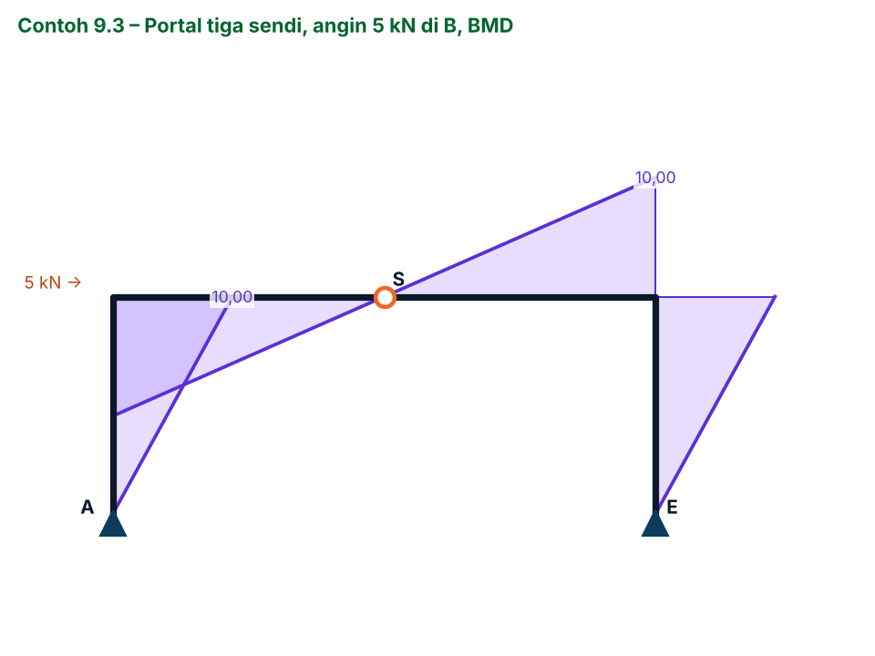
Gambar 9.3. BMD portal tiga sendi akibat angin Contoh 9.2.
Pada gudang beratap pelana, kaki kuda-kuda miring dari puncak kolom ke sendi puncak. Prinsip hitungannya sama; tinggi f diukur dari garis tumpuan ke sendi puncak.

Gambar 9.4. BMD portal pelana gudang dengan penutup lama.
Peran: kelompok sebagai tim teknis dinas pertanian yang diminta koperasi menilai rencana penggantian atap. Waktu: 70 menit (studio lembar kerja) + presentasi 5 menit. Bobot: Case Method 8% + Tugas & Kuis 2% (CPMK-3).
Data kasus (untuk pembelajaran): portal baja tiga sendi seperti Contoh 9.3; jarak antarportal 4 m. Beban per m² proyeksi horizontal: penutup lama (seng + gording) 0,20 kN/m²; genteng beton + reng/usuk tambahan 0,60 kN/m² [PERLU VERIFIKASI data produk]; beban hidup atap 0,50 kN/m² (data kasus). Kapasitas momen izin profil portal 45 kN·m dan kapasitas angkur fondasi terhadap gaya horizontal 12 kN per kaki (data kasus).
Tugas kelompok:
Hitung q per portal untuk penutup lama dan genteng beton (q = beban per m² × jarak portal).
Hitung V, H, dan momen sudut untuk kedua kondisi; gambar BMD.
Bandingkan dengan kapasitas momen (45 kN·m) dan angkur (12 kN).
Usulkan minimal dua alternatif (mis. kembali ke penutup ringan, menambah portal sehingga jarak 3 m, perkuatan sudut) dan hitung salah satunya.
Putuskan rekomendasi akhir dan presentasikan kepada “pengurus koperasi”.
| Kondisi | q (kN/m) | V (kN) | H (kN) | M sudut (kN·m) | Terhadap izin 45 kN·m / 12 kN |
|---|---|---|---|---|---|
| Penutup lama (0,70 kN/m² × 4 m) | 2,80 | 16,80 | 8,40 | 33,60 | 75% / 70% – aman |
| Genteng beton (1,10 kN/m² × 4 m) | 4,40 | 26,40 | 13,20 | 52,80 | **117% / 110% – tidak aman** |
| Genteng beton, jarak portal 3 m | 3,30 | 19,80 | 9,90 | 39,60 | 88% / 83% – aman |
Tabel kunci dosen (dihitung ulang secara numerik; kosong pada versi mahasiswa).
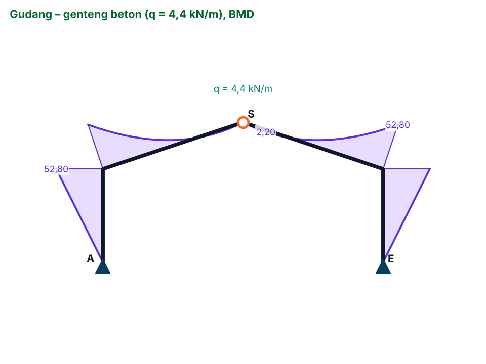
Gambar 9.5. BMD portal pelana setelah diganti genteng beton: momen sudut naik 57% menjadi 52,8 kN·m.
Kunci keputusan: penggantian langsung tidak disetujui (momen 117% dan dorongan angkur 110% kapasitas). Alternatif yang memenuhi: penutup ringan berinsulasi (mis. genteng metal berpasir + peredam panas) atau genteng beton dengan portal tambahan (jarak 3 m) setelah fondasi baru diperiksa. Perkuatan sudut (haunch) perlu perhitungan di Struktur Baja.
Tiga contoh (9.1 balok datar beban merata, 9.2 angin, 9.3 pelana) dan tabel Case Method 3, dengan empat BMD dari hasil hitungan.
Kartu prompt AI Tutor (salin ke chatbot)
| Aspek | Spesifikasi |
|---|---|
| Nama objek | ar-bab09-gudang.glb (+ .usdz) |
| Tujuan belajar | Melihat sendi kaki dan puncak, arah dorongan H, dan pengaruh berat penutup atap (indikator 3.3.a, 3.3.d) |
| Pembuatan model | Revit/SketchUp: gudang 12 × 16 m, 5 portal WF, gording, dua pilihan penutup; Blender: animasi; GLB ≤ 10 MB |
| Hotspot & label | (1) Sendi kaki A dan E; (2) Sendi puncak S; (3) Panah V dan H; (4) Sudut dengan momen terbesar; (5) Angkur fondasi |
| Animasi | Tombol “Seng ↔︎ Genteng beton”: panah H dan label momen sudut membesar; tombol “Jarak portal 4 m ↔︎ 3 m” |
| Kode QR | Menuju ar/bab-09.html |
| Cadangan | Gambar 9.4–9.5 dan video 360° |
| Pertanyaan pengamatan | (a) Di mana momen terbesar? (b) Mengapa kaki cenderung membuka ke luar? (c) Bagaimana jarak antarportal memengaruhi beban tiap portal? |
Zona AR (model 3D) – versi interaktif
Pindai kode QR untuk membuka e-book interaktif di SPADA PNP, lalu buka Portal Tiga Sendi.
| Aspek | Spesifikasi |
|---|---|
| Tujuan | Reaksi V, H dan BMD portal tiga sendi balok datar atau pelana, beban merata atap dan beban horizontal |
| Rumus | \(\Sigma M_A=0;\ \Sigma F_y=0;\ \Sigma M_S^{kiri}=0;\ \Sigma F_x=0;\ H=\tfrac{qL^2}{8f}\ (\text{simetris})\) |
| Input | L (m; 4–40), tinggi kolom h (m), tinggi sendi puncak f (m; > h untuk pelana, = h untuk datar), q (kN/m) atau beban per m² × jarak portal, angin di puncak kolom (kN) |
| Output | V_A, V_E, H_A, H_E; momen sudut; BMD pada gambar portal; rasio terhadap kapasitas momen dan angkur (opsional) |
| Mode Case Method | “Bandingkan penutup atap”: hingga 3 skenario berdampingan |
| Validasi & fitur | f > 0; peringatan bila V negatif (kaki terangkat); reset; salin; ekspor CSV/PDF/PNG |
| Kasus uji | Input | Hasil yang diharapkan | Rujukan |
|---|---|---|---|
| 1 | Datar: L = 10, h = f = 4, q = 2 | V = 10; H = 6,25; M sudut = 25,00 | Contoh 9.1 |
| 2 | Datar: L = 10, h = 4, angin 5 di B | V_A = –2; V_E = 2; H_A = H_E = –2,5; M sudut = 10,00 | Contoh 9.2 |
| 3 | Pelana: L = 12, h = 4, f = 6, q = 2,8 | V = 16,80; H = 8,40; M sudut = 33,60 | Contoh 9.3 |
| 4 | Pelana: q = 4,4 | H = 13,20; M sudut = 52,80 | Case Method 3 |
Alat hitung – versi interaktif
Pindai kode QR untuk membuka e-book interaktif di SPADA PNP, lalu buka Portal Tiga Sendi.
Case Method 3 disajikan lengkap di subbab 9.4.
Ketiga kotak ada di subbab 9.3.
Portal tiga sendi: 4 reaksi, statis tertentu karena sendi S memberi ΣM_S = 0 untuk satu bagian.
Langkah: ΣM_A → V_E; ΣFy → V_A; ΣM_S bagian kiri/kanan → H; ΣFx → H lainnya.
Simetris dengan beban merata: V = qL/2; H = qL²/(8f); momen sudut = H × tinggi kolom.
Atap lebih berat atau lebih landai → H dan momen sudut naik → periksa profil dan angkur.
Keputusan teknis membandingkan beberapa alternatif terhadap kapasitas.
Jumlah reaksi tumpuan portal tiga sendi …
Portal tiga sendi statis tak tentu karena memiliki 4 reaksi.
Persamaan tambahan portal tiga sendi adalah …
Portal simetris L = 8 m, f = 4 m, q = 3 kN/m. V = … kN
Soal no. 4: H = … kN
Soal no. 4 dengan tinggi kolom 3 m: momen sudut = … kN·m
Beban atap 0,9 kN/m² dan jarak portal 5 m. q per portal = … kN/m
Jika tinggi sendi puncak f diperkecil (atap lebih landai), H akan …
Contoh 9.3 dengan q dua kali lipat: momen sudut = … kN·m
Tukang berkata “rangka baja kuat, ganti saja ke genteng beton”. Tanggapan tim teknis yang tepat …
Rancang jarak antarportal maksimum agar genteng beton (1,10 kN/m² total) aman terhadap momen izin 45 kN·m. Tunjukkan hitungan.
Jawaban: ________________________Saya dapat menjelaskan mengapa portal tiga sendi statis tertentu. 1 2 3 4 5
Saya dapat menghitung V dan H. 1 2 3 4 5
Saya dapat menggambar BMD portal tiga sendi. 1 2 3 4 5
Saya dapat memberi rekomendasi atap berdasarkan hitungan. 1 2 3 4 5
Apa yang sudah/belum saya pahami? • Tindak lanjut: skor ≤ 3 → ulangi Contoh 9.1 dengan Alat Hitung, lalu kerjakan soal 11 kuis bersama kelompok.
| Istilah | Arti |
|---|---|
| Dorongan horizontal (H) | Reaksi horizontal di kaki portal tiga sendi yang menahan kaki membuka. |
| Haunch | Penebalan/pengaku di sudut portal baja untuk menambah kapasitas momen. |
| Jarak antarportal | Jarak antara dua portal berurutan; menentukan lebar beban atap yang dipikul satu portal. |
| Portal tiga sendi | Portal dengan dua sendi kaki dan satu sendi dalam (puncak). |
| Tie rod (batang tarik) | Batang yang menghubungkan kedua kaki untuk menahan dorongan. |
Hibbeler, R. C. (2024b). Structural analysis (11th ed.). Pearson. (Bab 5: three-hinged frames/arches)
Leet, K. M., Uang, C.-M., Lanning, J. T., & Gilbert, A. M. (2018). Fundamentals of structural analysis (5th ed.). McGraw-Hill. (Bab 6: arches)
Badan Standardisasi Nasional. (2020). SNI 1727:2020 Beban desain minimum dan kriteria terkait untuk bangunan gedung dan struktur lain. BSN.
Minggu 11 • Sub-CPMK 4.1 • CPMK-4 • CPL 2 / IK 2.2 • Estimasi belajar: 120 menit mandiri + 220 menit kelas/studio + latihan tambahan 60 menit
Sub-CPMK 4.1: Mahasiswa mampu menghitung gaya batang rangka batang.
| Kode | Indikator | Level Bloom |
|---|---|---|
| 4.1.a | Menyebutkan asumsi rangka batang ideal dan tipe rangka (Pratt, Howe, Warren) | C1–C2 |
| 4.1.b | Memeriksa kestabilan dan sifat statis tertentu dengan m + r = 2j | C3 – memeriksa |
| 4.1.c | Mengidentifikasi batang nol | C4 – mengidentifikasi |
| 4.1.d | Menghitung gaya batang dengan metode titik buhul | C3 – menghitung |
| 4.1.e | Menghitung gaya batang tertentu dengan metode potongan (Ritter) dan memilih metode yang efisien | C3–C4 |
Kriteria (RPS): gaya batang (tarik/tekan) benar dengan metode titik buhul dan Ritter.
Kesetimbangan titik (Bab 3) → (10.4) metode titik buhul: ΣFx = 0, ΣFy = 0 tiap titik
Kesetimbangan benda tegar (Bab 3) → (10.5) metode Ritter: potong ≤ 3 batang, ΣM = 0
Rangka ideal (10.1) → hanya gaya aksial tarik/tekan
Kestabilan (10.2) m + r = 2j; batang nol (10.3)
Gaya batang → batang kritis → Bab 11 (proyek jembatan rangka)
Demonstrasi model rangka: dosen menekan model persegi dari stik yang disambung pin – model langsung “miring” menjadi jajar genjang. Setelah ditambah satu batang diagonal, model menjadi kaku. Mengapa?
Kasus nyata: rangka atap baja ringan gudang, jembatan rangka baja di jalan provinsi, dan menara BTS. Batang mana yang tertarik dan mana yang tertekan?
Gambar 10.1. Rangka batang di sekitar kita (ilustrasi baru, sumber: dokumen penulis)
Teks alternatif: Tiga panel: kuda-kuda baja ringan rumah, jembatan rangka baja di atas sungai, menara telekomunikasi; bentuk segitiga disorot.
Prompt gambar: Educational collage illustration of truss structures in Indonesia: cold-formed steel roof truss of a house, steel truss bridge over a river, telecommunication tower, triangular units highlighted with glowing cyan lines, navy background, flat vector, no text
Rangka batang (truss) adalah susunan batang lurus yang membentuk segitiga-segitiga. Untuk analisis, dipakai asumsi rangka ideal:
Batang disambung di ujung dengan sendi (titik buhul) tanpa gesekan.
Beban dan reaksi hanya bekerja di titik buhul.
Berat batang diabaikan atau dibagi ke titik buhul.
Akibatnya setiap batang hanya memikul gaya aksial: tarik (+) atau tekan (–).
| Tipe | Ciri | Penggunaan umum |
|---|---|---|
| Pratt | Diagonal miring ke arah tengah bentang (turun ke tengah); pada beban gravitasi diagonal tertarik, vertikal tertekan/kecil | Jembatan baja bentang pendek–menengah |
| Howe | Kebalikan Pratt: diagonal tertekan, vertikal tertarik | Jembatan/atap kayu (kayu kuat tekan) |
| Warren | Segitiga sama kaki tanpa (atau dengan sedikit) batang vertikal; diagonal bergantian tarik–tekan | Jembatan, rangka atap bentang panjang |
Keterangan: m = jumlah batang; r = jumlah reaksi tumpuan; j = jumlah titik buhul. Setiap titik buhul memberi 2 persamaan (ΣFx, ΣFy). Batasan: m + r < 2j → labil; m + r > 2j → statis tak tentu; m + r = 2j belum menjamin stabil – susunan harus tersusun dari segitiga.
Batang nol adalah batang dengan gaya nol untuk pembebanan tertentu. Mengenalinya lebih dulu menghemat hitungan. Dua aturan:
Aturan 1: pada titik buhul dengan dua batang tidak segaris dan tanpa beban/reaksi, kedua batang itu nol.
Aturan 2: pada titik buhul dengan tiga batang, dua di antaranya segaris dan tanpa beban/reaksi, batang ketiga nol.
Batang nol tetap dibutuhkan: menjaga kestabilan, memperpendek panjang tekuk batang tekan, dan memikul beban lain (misalnya angin).
Hitung reaksi tumpuan seluruh rangka.
Pilih titik buhul dengan paling banyak 2 gaya batang yang belum diketahui (biasanya di tumpuan).
Gambar DBB titik; anggap batang tarik; tulis ΣFx = 0 dan ΣFy = 0.
Lanjut ke titik berikutnya; gaya yang sudah diketahui dipakai sebagai gaya luar.
Titik terakhir menjadi pemeriksaan.
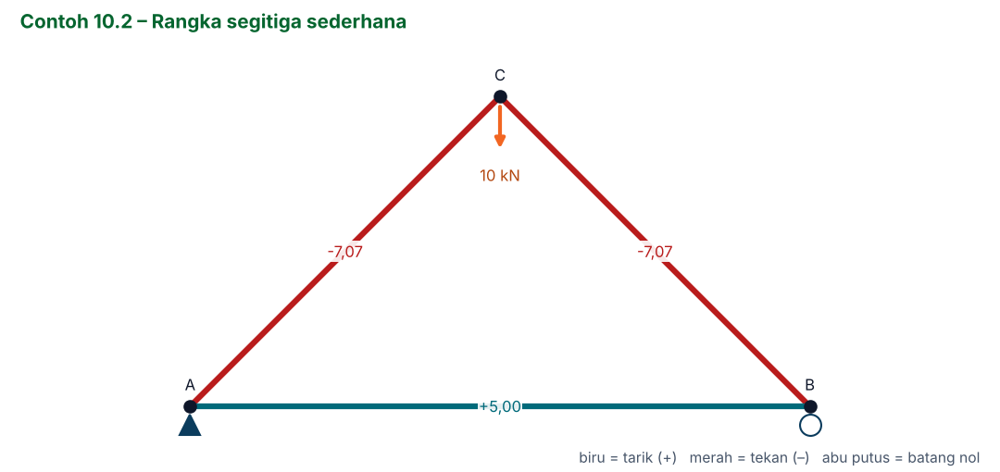
Gambar 10.2a. Gaya batang rangka segitiga Contoh 10.2.
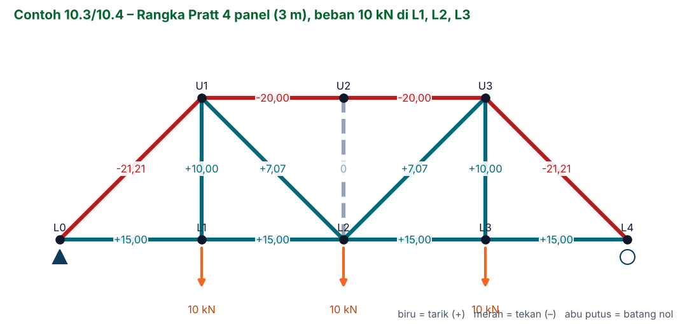
Gambar 10.2b. Gaya batang rangka Pratt Contoh 10.3 (kN).
Jika hanya perlu gaya beberapa batang di tengah, metode titik buhul terlalu panjang. Metode Ritter memotong rangka melalui paling banyak tiga batang yang belum diketahui, lalu memakai kesetimbangan salah satu bagian. Triknya: ambil momen terhadap titik potong dua batang lain, sehingga satu persamaan langsung memberi satu gaya.
Hitung reaksi.
Buat potongan melalui ≤ 3 batang (tidak bertemu di satu titik semua).
Ambil bagian kiri atau kanan (pilih yang gayanya lebih sedikit).
ΣM terhadap titik pertemuan dua batang → gaya batang ketiga. Ulangi untuk batang lain; gunakan ΣFy untuk diagonal.
| Situasi | Metode yang dianjurkan |
|---|---|
| Semua gaya batang diperlukan (mis. tabel gaya untuk proyek) | Titik buhul (atau Alat Hitung/Ftool), dibantu identifikasi batang nol |
| Hanya 1–3 batang di tengah bentang | Ritter |
| Memeriksa hasil perangkat lunak | Ritter pada beberapa batang kritis |

Gambar 10.3. Batang nol (abu-abu putus) pada beban tunggal Contoh 10.5.
Lima contoh: klasifikasi (10.1), titik buhul segitiga dan Pratt (10.2–10.3), Ritter (10.4), batang nol (10.5). Semua gaya dicocokkan dengan program sistem persamaan.
Kartu prompt AI Tutor (salin ke chatbot)
| Aspek | Spesifikasi |
|---|---|
| Nama objek | ar-bab10-rangka.glb (+ .usdz): jembatan Pratt 4 panel dan kuda-kuda Howe |
| Tujuan belajar | Melihat batang tarik/tekan dengan warna dan batang nol (indikator 4.1.c–d) |
| Pembuatan model | Blender: batang silinder, titik buhul bola; warna diubah lewat skrip sesuai gaya; GLB ≤ 6 MB |
| Hotspot & label | Tiap batang: nama + gaya (kN, T/C); titik buhul L0–L4, U1–U3; reaksi |
| Animasi | Pilih beban (tiga beban / satu beban di tengah): warna batang berubah; batang nol berkedip |
| Kode QR | Menuju ar/bab-10.html |
| Cadangan | Gambar 10.2b dan 10.3 |
| Pertanyaan pengamatan | (a) Batang mana yang tertekan paling besar? (b) Mengapa vertikal tengah nol? (c) Bagaimana warna diagonal jika tipe diganti Howe? |
Zona AR (model 3D) – versi interaktif
Pindai kode QR untuk membuka e-book interaktif di SPADA PNP, lalu buka Rangka Batang: Titik Buhul dan Ritter.
| Aspek | Spesifikasi |
|---|---|
| Tujuan | Gaya semua batang (sistem persamaan titik buhul) dan gaya batang terpilih (Ritter langkah demi langkah) |
| Rumus | \(\sum F_x=0,\ \sum F_y=0\ \text{(tiap titik)};\ m+r=2j;\ \text{Ritter: } \Sigma M_{titik\ potong}=0\) |
| Input | Templat (Pratt, Howe, Warren; jumlah panel, panjang panel, tinggi) atau koordinat titik + daftar batang; tumpuan; beban di titik buhul |
| Output | Tabel gaya batang (kN, T/C), reaksi, status m + r = 2j, batang nol; gambar berwarna; langkah Ritter untuk batang yang diklik |
| Validasi | Matriks singular → “Rangka labil – periksa susunan segitiga”; beban di luar titik ditolak |
| Fitur | Ekspor tabel gaya (CSV) untuk Bab 11; reset; salin; PDF/PNG |
| Kasus uji | Input | Hasil yang diharapkan | Rujukan |
|---|---|---|---|
| 1 | Segitiga A(0;0) B(4;0) C(2;2), 10 kN di C | AC = BC = –7,07; AB = +5,00 kN | Contoh 10.2 |
| 2 | Pratt 4 × 3 m, tinggi 3 m; 10 kN di L1–L3 | Atas –20,00; bawah +15,00; ujung –21,21; diagonal +7,07; U1L1 +10,00; U2L2 0 | Contoh 10.3 |
| 3 | Ritter panel 2 kasus 2 | L1L2 = +15,00; U1U2 = –20,00; U1L2 = +7,07 | Contoh 10.4 |
| 4 | Pratt, 20 kN di L2 | Vertikal 0; diagonal +14,14; atas –20,00 | Contoh 10.5 |
Alat hitung – versi interaktif
Pindai kode QR untuk membuka e-book interaktif di SPADA PNP, lalu buka Rangka Batang: Titik Buhul dan Ritter.
Saat memasang pipa, tukang memotong satu batang vertikal kuda-kuda Pratt gudang karena “toh gayanya nol”. Beberapa bulan kemudian atap melendut saat angin kencang.
Benarkah batang itu nol untuk beban gravitasi simetris? Tunjukkan dengan aturan batang nol.
Mengapa batang nol tetap diperlukan (sebutkan dua alasan)?
Apa rekomendasimu kepada pemilik gudang?
Kunci dosen: U2L2 nol untuk beban gravitasi pada titik bawah (Aturan 2), tetapi tidak nol untuk beban angin/tak simetris; batang itu juga memperpendek panjang tekuk batang atas. Rekomendasi: pasang kembali batang dengan sambungan sesuai detail, alihkan jalur pipa.
Info Penting di 10.3; Tips Lapangan dan Peringatan K3 di 10.5–10.6.
Rangka ideal: sendi di titik buhul, beban di titik → batang hanya tarik/tekan.
m + r = 2j statis tertentu (bila tersusun segitiga).
Aturan batang nol mempercepat hitungan.
Titik buhul: 2 persamaan per titik, mulai dari titik dengan ≤ 2 gaya tak diketahui.
Ritter: potong ≤ 3 batang; momen terhadap titik temu dua batang.
Pada rangka ideal, batang hanya memikul …
Jodohkan (1) Pratt (2) Howe (3) Warren dengan (A) diagonal tertekan (B) segitiga sama kaki tanpa vertikal (C) diagonal tertarik
Batang nol boleh dihilangkan dari rangka.
Rangka dengan j = 6, sendi–rol. Agar statis tertentu, m = …
Rangka segitiga Contoh 10.2 dengan beban 16 kN. F_AB = … kN
Soal no. 5: F_AC = … kN
Pratt Contoh 10.3 dengan beban 20 kN di L1, L2, L3. F_U1U2 = … kN
Ritter: R = 12 kN di L0, beban 8 kN di L1 (3 m), tinggi 3 m. ΣM di U1 (3; 3) → F_L1L2 = … kN
Pada titik dengan dua batang tidak segaris tanpa beban …
Untuk mencari hanya gaya batang atas di tengah bentang, metode paling efisien …
Hasil Bayu: F_U1U2 = +20 kN. Penilaian …
Rancang rangka 4 panel (bentang 12 m, tinggi 3 m) yang diagonalnya tertekan, lalu jelaskan kapan pilihan ini cocok.
Jawaban: ________________________Saya dapat memeriksa m + r = 2j. 1 2 3 4 5
Saya dapat mengenali batang nol. 1 2 3 4 5
Saya dapat memakai metode titik buhul. 1 2 3 4 5
Saya dapat memakai metode Ritter. 1 2 3 4 5
Apa yang sudah/belum saya pahami? • Tindak lanjut: latihan tambahan 60 menit (RPS) – kerjakan ulang Contoh 10.3–10.4, cocokkan dengan Alat Hitung Rangka.
| Istilah | Arti |
|---|---|
| Batang nol | Batang yang gayanya nol pada pembebanan tertentu. |
| Metode Ritter | Metode potongan: memotong ≤ 3 batang dan memakai ΣM. |
| Rangka batang | Susunan batang lurus berbentuk segitiga yang disambung di titik buhul. |
| Tekuk (buckling) | Batang tekan langsing melengkung tiba-tiba sebelum bahannya hancur. |
| Titik buhul | Titik sambungan batang-batang rangka. |
Hibbeler, R. C. (2024a). Engineering mechanics: Statics (15th ed., SI units). Pearson. (Bab 6: structural analysis)
Hibbeler, R. C. (2024b). Structural analysis (11th ed.). Pearson. (Bab 3: trusses)
Leet, K. M., Uang, C.-M., Lanning, J. T., & Gilbert, A. M. (2018). Fundamentals of structural analysis (5th ed.). McGraw-Hill. (Bab 4)
Minggu 12–15 • Sub-CPMK 4.2, 4.3, 5.1, 5.2 • CPMK-4 dan CPMK-5 • Team-Based Project RT-01 (30% nilai akhir) • Estimasi: 4 × (120 menit mandiri + 220 menit studio)
| Minggu | Sub-CPMK (RPS) | Indikator | Bobot |
|---|---|---|---|
| 12 | 4.2 Merencanakan model jembatan rangka | Sketsa rangka, beban rencana, dan tabel gaya batang lengkap | 5% (CPMK-4) |
| 13 | 4.3 Membuat model dan memprediksi batang kritis | Model sesuai gambar; batang kritis diprediksi dari hitungan | 5% (CPMK-4) |
| 14 | 5.1 Memverifikasi hasil hitung dengan perangkat lunak | Selisih manual vs perangkat lunak ≤ 5% dan dijelaskan | 5% TBP + 2% Partisipatif (CPMK-5) |
| 15 | 5.2 Menguji model dan mempresentasikan hasil tim | Prediksi vs hasil uji dibandingkan; laporan & presentasi memenuhi rubrik | 15% (CPMK-5) |
Bab 10 (gaya batang) → Mg 12: desain & tabel gaya batang
Data uji bahan (kapasitas tarik/tekan stik) → Mg 13: prediksi batang kritis & beban runtuh
Ftool/SAP2000/Alat Hitung → Mg 14: verifikasi ≤ 5%
Uji beban → Mg 15: prediksi vs kenyataan → refleksi & laporan
Pertanyaan pemantik: Mengapa jembatan rangka yang beratnya hanya beberapa ton dapat memikul truk puluhan ton? Bagaimana insinyur tahu batang mana yang akan gagal lebih dulu – sebelum jembatan dibangun?
Tantangan tim: buat jembatan rangka bentang 60 cm dari stik es krim/balsa yang memikul beban titik di tengah dengan rasio beban runtuh / berat model sebesar mungkin – dan prediksikan beban runtuhnya sebelum diuji.
| Butir | Ketentuan (RPS Bagian 8) |
|---|---|
| Tim | 4 orang; peran bergilir: koordinator, penghitung, perakit, pendokumentasi (dicatat di log) |
| Bentang & beban | Bentang bersih 60 cm di atas dua tumpuan meja; beban titik di tengah bentang (di titik buhul bawah) |
| Bahan | Stik es krim/balsa, lem kayu/lem tembak; dilarang memakai paku, kawat, atau bahan lain |
| Luaran | (1) Gambar rangka & tabel gaya batang; (2) lembar verifikasi perangkat lunak; (3) model fisik; (4) video uji beban; (5) laporan 8–10 halaman; (6) presentasi 7 menit + log kontribusi |
| Penilaian | Rubrik TBP (RPS Bagian 9). Nilai individu = nilai kelompok × faktor kontribusi (0,8–1,1) dari log aktivitas dan asesmen sejawat |
| Integritas & K3 | Pelindung mata dan area aman saat uji; data uji dicatat apa adanya |
Tim memilih tipe rangka (Pratt, Warren, atau Howe), membuat sketsa berskala, lalu menghitung gaya batang per satuan beban P (P = 1). Contoh desain acuan:

Gambar 11.1. Desain acuan Pratt 4 panel (panel 15 cm, tinggi 12 cm): gaya batang per P.

Gambar 11.2. Alternatif Warren 4 panel: gaya batang per P.
| Batang (Pratt) | Panjang (cm) | Gaya per P | Sifat |
|---|---|---|---|
| Batang atas U1U2, U2U3 | 15,0 | –1,250 | Tekan terbesar |
| Batang ujung L0U1, L4U3 | 19,2 | –0,800 | Tekan |
| Diagonal U1L2, U3L2 | 19,2 | +0,800 | Tarik |
| Batang bawah L0L1 … L3L4 | 15,0 | +0,625 | Tarik |
| Vertikal U1L1, U2L2, U3L3 | 12,0 | 0 | Batang nol (beban tunggal di tengah) |
Perbandingan: Warren acuan memiliki tekan terbesar sama (–1,25 P di batang atas tengah) tetapi tarik bawah lebih besar (+0,94 P) dan lebih banyak batang tekan diagonal. Tim boleh memilih dengan alasan.
Keterangan: F_i = gaya batang ke-i (N); f_i = koefisien gaya per satuan beban (dari tabel); P = beban di tengah (N). Batasan: berlaku selama rangka berperilaku linear dan sambungan tidak gagal lebih dulu.
Uji bahan sederhana (studio): tiap tim menguji minimal 3 benda uji untuk (a) kapasitas tarik satu stik dengan sambungan lem, dan (b) kapasitas tekan stik pada panjang yang dipakai (mis. 15 cm dan 19 cm). Catat semua hasil, pakai nilai terkecil sebagai kapasitas rencana.
Keterangan: C_i = kapasitas batang ke-i dari uji (N), kapasitas tarik untuk f_i > 0 dan kapasitas tekan untuk f_i < 0; f_i = koefisien gaya batang. Batang dengan nilai terkecil adalah batang kritis. Batasan: belum memperhitungkan kegagalan sambungan dan cacat perakitan.
Modelkan rangka di Ftool (atau SAP2000 versi pendidikan / Alat Hitung Rangka e-book) dengan koordinat yang sama.
Atur sambungan batang sebagai sendi (release momen) dan tumpuan sendi–rol.
Beri beban P = 100 N di titik tengah bawah.
Isi tabel verifikasi dan hitung selisih.
| Batang | Manual (N) | Perangkat lunak (N) | Selisih (%) | Penjelasan bila > 5% |
|---|---|---|---|---|
| U1U2 | –125,0 | [isi] | [isi] | [isi] |
| L0U1 | –80,0 | [isi] | [isi] | [isi] |
| U1L2 | +80,0 | [isi] | [isi] | [isi] |
| L1L2 | +62,5 | [isi] | [isi] | [isi] |
Kriteria (RPS): ≤ 5%. Penyebab umum selisih: koordinat berbeda, sambungan tidak diatur sebagai sendi, pembulatan.
Prosedur uji beban:
Timbang model (gram) dan ukur bentang.
Pasang model di atas dua tumpuan; gantungkan wadah beban di titik tengah bawah.
Tambahkan beban bertahap (mis. 5 N per langkah, tunggu 10 detik), catat lendutan visual dan bunyi.
Rekam video; catat beban saat runtuh dan batang/sambungan yang gagal pertama.
Hitung rasio beban runtuh / berat model; bandingkan dengan prediksi.
| Data uji | Isian tim |
|---|---|
| Berat model (g → N) | [isi] |
| Beban runtuh hasil uji (N) | [isi] |
| Beban runtuh prediksi (N) | [isi] |
| Selisih prediksi vs uji (%) | [isi] |
| Batang/sambungan yang gagal pertama | [isi] – sama dengan prediksi? Ya/Tidak |
| Rasio beban/berat | [isi] → peringkat kompetisi |
Laporan teknis (8–10 halaman, EYD V): 1) Pendahuluan & tujuan; 2) Desain & asumsi; 3) Hitungan gaya batang & tabel; 4) Data uji bahan & prediksi; 5) Verifikasi perangkat lunak; 6) Hasil uji beban & pembahasan; 7) Kesimpulan & saran; 8) Lampiran (gambar kerja, log kontribusi, foto/video).
Presentasi 7 menit: semua anggota berbicara; 1 menit desain, 2 menit hitungan & prediksi, 2 menit uji & perbandingan, 1 menit refleksi, 1 menit pelajaran untuk proyek nyata.
| Kriteria (bobot) | Sangat baik (86–100) | Baik (71–85) | Cukup (56–70) | Kurang (≤ 55) |
|---|---|---|---|---|
| Ketepatan teknis (35%) | Semua hasil memenuhi prinsip statika, efisien | Memenuhi, inefisiensi kecil | Ada bagian tidak memenuhi | Banyak kesalahan teknis |
| Gambar / model / luaran (20%) | Lengkap, konsisten dengan hitungan | Lengkap, sedikit tidak konsisten | Kurang lengkap | Tidak sesuai |
| Laporan teknis (20%) | Runtut, asumsi & rujukan jelas, EYD V | Runtut, rujukan kurang | Kurang runtut | Tidak memadai |
| Presentasi & tanya jawab (15%) | Jelas, semua menguasai | Jelas, sebagian menguasai | Kurang jelas | Tidak menguasai |
| Kolaborasi & integritas (10%) | Peran jelas, log lengkap, data jujur | Peran jelas, log kurang | Kontribusi timpang | Pelanggaran integritas |
Sumber: RPS SIP3115 Bagian 9 (rubrik TBP). Rubrik ini disesuaikan dengan konteks proyek model jembatan; kata “SNI 1727:2020” pada rubrik asli tidak relevan untuk model stik sehingga cukup “prinsip statika”.
| Tanggal | Anggota | Kegiatan | Durasi | Bukti | Paraf sejawat |
|---|---|---|---|---|---|
| [isi] | [isi] | [mis. menghitung gaya batang panel 1–2] | [jam] | [foto/berkas] | [ ] |
Faktor kontribusi individu 0,8–1,1 ditetapkan dari log dan asesmen sejawat; nilai individu = nilai kelompok × faktor.
Contoh 11.1 (prediksi beban runtuh) serta tabel gaya per P desain acuan Pratt dan Warren.
Kartu prompt AI Tutor (salin ke chatbot)
| Aspek | Spesifikasi |
|---|---|
| Nama objek | ar-bab11-jembatan-stik.glb (+ .usdz) |
| Tujuan belajar | Melihat desain acuan dalam ukuran nyata, letak batang kritis, dan detail pelat buhul (Sub-CPMK 4.2–4.3) |
| Pembuatan model | Blender: model stik skala 1:1 (60 cm), tekstur kayu; animasi uji beban sampai batang atas menekuk; GLB ≤ 8 MB |
| Hotspot & label | (1) Batang atas kritis; (2) Batang ujung; (3) Diagonal tarik; (4) Pelat buhul; (5) Titik beban |
| Animasi | Penggeser beban 0–150 N: warna batang berubah dari hijau → kuning → merah sesuai rasio F/C |
| Kode QR | Menuju ar/bab-11.html |
| Cadangan | Gambar 11.1–11.2 dan video uji |
| Pertanyaan pengamatan | (a) Batang mana yang berubah merah lebih dulu? (b) Bagaimana pelat buhul membantu? (c) Apa yang terjadi jika batang atas dibuat dua lapis? |
Zona AR (model 3D) – versi interaktif
Pindai kode QR untuk membuka e-book interaktif di SPADA PNP, lalu buka Proyek Tim: Model Jembatan Rangka.
| Aspek | Spesifikasi |
|---|---|
| Tujuan | Gaya batang per P, prediksi beban runtuh dari data uji tim, batang kritis, rasio beban/berat, tabel verifikasi |
| Rumus | \(F_i=f_iP;\ P_{runtuh}=\min_i C_i/ f_i ;\ \text{selisih}= F_m-F_s / F_s\) |
| Input | Templat rangka (Pratt/Warren/Howe; panel; tinggi); data uji kapasitas tarik & tekan per panjang batang; berat model; hasil perangkat lunak (untuk verifikasi) |
| Output | Tabel f_i; batang kritis & P_runtuh prediksi; tabel selisih manual vs perangkat lunak (warna ≤ 5% hijau); grafik prediksi vs hasil uji |
| Fitur | Ekspor CSV untuk lampiran laporan; templat log kontribusi; reset; salin; PDF |
| Kasus uji | Input | Hasil yang diharapkan | Rujukan |
|---|---|---|---|
| 1 | Pratt 4 × 15 cm, tinggi 12 cm, P = 1 | Atas –1,250; ujung –0,800; diagonal +0,800; bawah +0,625; vertikal 0 | Gambar 11.1 |
| 2 | Data uji contoh (600/150/110 N) | P_runtuh = 120 N; batang kritis U1U2 | Contoh 11.1 |
| 3 | Warren 4 × 15 cm, tinggi 12 cm, P = 1 | Atas tengah –1,250; bawah tengah +0,938; diagonal ±0,590 | Gambar 11.2 |
Alat hitung – versi interaktif
Pindai kode QR untuk membuka e-book interaktif di SPADA PNP, lalu buka Proyek Tim: Model Jembatan Rangka.
Seluruh bab ini adalah proyek tim RT-01 (subbab 11.1–11.5).
Tips Lapangan di 11.2; Peringatan K3 dan Integritas Data di 11.4.
Proyek menghubungkan seluruh CPMK-4 dan CPMK-5: desain → prediksi → verifikasi → uji → refleksi.
Gaya batang ditulis sebagai koefisien per P agar mudah dipakai untuk berbagai beban.
Beban runtuh prediksi = kapasitas terkecil dibagi koefisien gaya; batang tekan dan sambungan sering menjadi batang kritis.
Verifikasi perangkat lunak: selisih ≤ 5% dan dijelaskan.
Kejujuran data dan pembagian peran sama penting dengan hasil uji.
Bentang model jembatan RT-01 adalah …
Bobot TBP dalam nilai akhir …
Batang vertikal desain acuan Pratt bergaya nol untuk beban tunggal di tengah.
P = 80 N pada desain Pratt acuan. Gaya batang atas = … N
Kapasitas tekan batang atas 200 N. P_runtuh berdasarkan batang atas = … N
Manual –125 N; Ftool –121 N. Selisih = … %
Prediksi 120 N, hasil uji 85 N dengan sambungan lepas. Penjelasan paling tepat …
Model 120 g memikul 96 N. Rasio beban/berat = … (g = 9,81 m/s²)
Satu anggota mengusulkan mengganti angka hasil uji agar mendekati prediksi. Sikap tim yang benar …
Usulkan dua perubahan desain untuk menaikkan rasio beban/berat dan perkirakan pengaruhnya dengan koefisien gaya.
Jawaban: ________________________Apa peran saya dalam tim dan apa bukti kontribusinya?
Seberapa dekat prediksi tim dengan hasil uji? Mengapa?
Konsep Mekanika Teknik 1 mana yang paling terasa manfaatnya di proyek ini?
Apa yang akan saya lakukan berbeda jika mengerjakan jembatan nyata? Skala pemahaman: 1 2 3 4 5
| Istilah | Arti |
|---|---|
| Batang kritis | Batang yang diperkirakan gagal paling dulu. |
| Faktor kontribusi | Pengali nilai individu (0,8–1,1) berdasarkan log dan penilaian sejawat. |
| Koefisien gaya (f_i) | Gaya batang akibat beban satuan P = 1. |
| Pelat buhul | Pelat penyambung di titik buhul. |
| Rasio beban/berat | Beban runtuh dibagi berat model; ukuran efisiensi. |
Tim Dosen PSD3TS PNP. (2026). RPS Mekanika Teknik I (SIP3115), Bagian 8–9: Rencana Tugas RT-01 dan rubrik.
Hibbeler, R. C. (2024a). Engineering mechanics: Statics (15th ed., SI units). Pearson. (Bab 6)
Leet, K. M., Uang, C.-M., Lanning, J. T., & Gilbert, A. M. (2018). Fundamentals of structural analysis (5th ed.). McGraw-Hill. (Bab 4)
Minggu 16 • UAS berbasis kasus terintegrasi • CPMK-3 (6%) dan CPMK-4 (7%) = 13% nilai akhir • Ujian tertulis 100 menit • Ambang tuntas CPMK ≥ 70
| CPMK / Sub-CPMK | Indikator | Level | Nomor soal | Poin |
|---|---|---|---|---|
| CPMK-3 / 3.1 | Sendi dalam dan balok Gerber | C2–C3 | A1–A2 | 6 |
| CPMK-3 / 3.2 | Portal statis tertentu | C3–C4 | A3, A5 | 6 |
| CPMK-3 / 3.3 | Portal tiga sendi (beban atap + angin) | C3–C5 | A4, B1 | 3 + 31 |
| CPMK-4 / 4.1 | Kestabilan, batang nol, titik buhul, Ritter | C3–C4 | A6–A10, B2 | 15 + 39 |
| Jumlah | 10 + 2 soal | 100 poin: CPMK-3 = 46, CPMK-4 = 54 (= 6% dan 7% nilai akhir) |
Momen lentur di sendi dalam selalu nol.
Balok anak Gerber 6 m dengan q = 2 kN/m. Gaya di tiap sendi = … kN
Portal L: kolom 3 m dijepit, balok 2 m, P = 5 kN di ujung balok. MA = … kN·m
Portal tiga sendi simetris L = 10 m, f = 5 m, q = 2 kN/m. H = … kN
Portal sendi–rol diberi angin di puncak kolom kiri. Kolom di atas rol …
Rangka sendi–rol dengan j = 7. Agar statis tertentu, m = …
Titik buhul tanpa beban dengan dua batang segaris dan satu batang lain: batang lain itu …
Rangka segitiga Contoh 10.2 dengan beban 6 kN. F_AB = … kN
Ritter: R = 20 kN di L0, beban 10 kN di L1 (x = 4 m), tinggi 4 m. ΣM di U1 (4; 4) → F_L1L2 = … kN
Manual 50 kN, perangkat lunak 48 kN. Selisih = … %
Kasus B1 – Gudang mini pupuk (31 poin, CPMK-3, C3–C5). Portal tiga sendi balok datar: sendi A (0; 0), sendi E (8; 0), kolom 4 m, sendi S di tengah balok (4; 4). Beban atap q = 3 kN/m; angin 4 kN ke kanan di B (puncak kolom kiri). (a) Hitung V_A, V_E, H_A, H_E. (b) Hitung momen di kedua sudut dan gambar BMD. (c) Sudut mana yang paling kritis dan mengapa? (d) Jika kapasitas momen izin profil 30 kN·m (data kasus), apa rekomendasimu?
Kasus B2 – Jembatan rangka Warren desa (39 poin, CPMK-4, C3–C4). Rangka Warren tanpa batang vertikal: titik bawah L0–L4 berjarak 4 m (bentang 16 m), titik atas U1–U4 di x = 2, 6, 10, 14 m setinggi 3 m; sendi L0, rol L4. Beban 12 kN di L1, L2, L3. (a) Periksa m + r = 2j. (b) Hitung reaksi. (c) Hitung gaya batang L0U1 dan L0L1 (titik buhul L0). (d) Hitung gaya U2U3 dan L1L2 dengan Ritter. (e) Sebutkan batang tekan terbesar dan usulkan cara memperkuatnya.
| Kasus | Kunci | Rubrik |
|---|---|---|
| B1 | Superposisi. Beban atap: V = 12 kN tiap kaki; H = 3 × 64 ÷ 32 = 6 kN (ke dalam). Angin: V_E = 4 × 4 ÷ 8 = 2 kN (↑), V_A = 2 kN (↓); H_A = H_E = 2 kN (←). Total: V_A = 10; V_E = 14 kN; H_A = 4 kN (→); H_E = 8 kN (←); periksa ΣFx: 4 + 4 – 8 = 0 ✓. Momen sudut kiri = 4 × 4 = 16,00 kN·m; sudut kanan = 8 × 4 = 32,00 kN·m (tarik sisi luar); M di S = 0. Sudut kanan kritis karena dorongan angin dan atap searah. 32 > 30 → tidak aman: perkuat sudut (haunch) atau ganti profil, atau tambah pengaku/ikatan angin (periksa angkur kaki kanan 8 kN). | Reaksi 10 • momen & BMD 9 • analisis sudut kritis 6 • rekomendasi 6 |
| B2 | (a) j = 9, m = 15, r = 3 → 18 = 18 ✓. (b) R = 18 kN tiap tumpuan. (c) Diagonal: panjang √(2² + 3²) = 3,61 m, sin = 0,832: F_L0U1 = –18 ÷ 0,832 = –21,63 kN (tekan); F_L0L1 = 21,63 × (2 ÷ 3,61) = +12,00 kN (tarik). (d) Potong panel tengah: ΣM di L2 (8; 0): 18 × 8 – 12 × 4 + F_U2U3 × 3 = 0 → F_U2U3 = –32,00 kN; ΣM di U2 (6; 3): 18 × 6 – 12 × 2 – F_L1L2 × 3 = 0 → F_L1L2 = +28,00 kN. (e) Tekan terbesar: batang atas tengah U2U3 (–32 kN); perkuat dengan profil lebih besar/ganda atau pengaku lateral untuk memperpendek panjang tekuk. | Klasifikasi 5 • reaksi 4 • titik buhul 10 • Ritter 14 • analisis & usulan 6 |
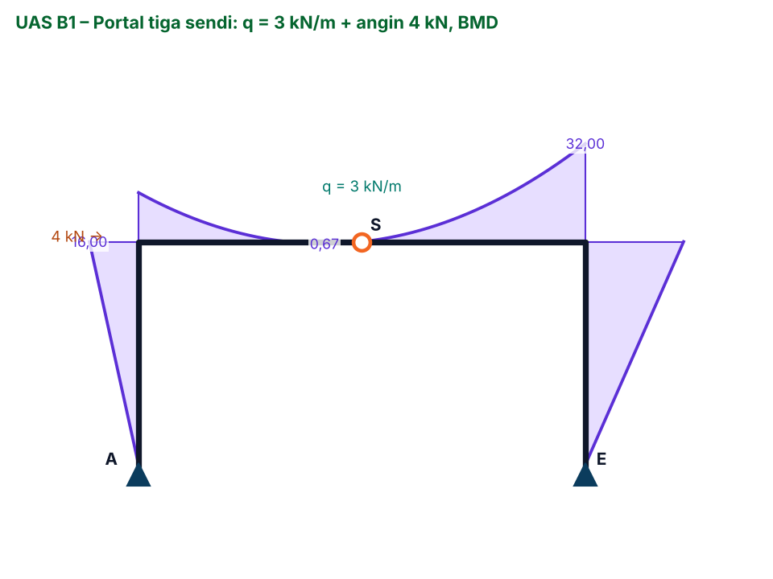
Gambar UAS-1. BMD kunci Kasus B1 (sisi tarik).

Gambar UAS-2. Gaya batang kunci Kasus B2 (kN).
Skor UAS dipisah per CPMK: CPMK-3 = (A1–A5 + B1) ÷ 46 × 100; CPMK-4 = (A6–A10 + B2) ÷ 54 × 100.
Nilai akhir CPMK menggabungkan semua komponen RPS Bagian 7 (Partisipatif, Case Method, TBP, Tugas & Kuis, UTS, UAS).
CPMK tuntas bila ≥ 70; yang belum tuntas mendapat umpan balik terarah dan asesmen ulang ≤ 2 minggu setelah nilai diumumkan.
Dosen mengisi lembar evaluasi CPMK (persentase tuntas, penyebab, rencana perbaikan) untuk Rapat Tinjauan Manajemen jurusan (RPS Bagian 10).
Bandingkan skala pemahaman saya di minggu 1 dan minggu 16: apa yang paling berubah?
Konsep mana yang paling saya butuhkan untuk Mekanika Teknik II (tegangan & lendutan)?
Kebiasaan baik apa (DBB rapi, cek ΣM, satuan) yang akan saya bawa ke semester berikutnya?
Uji kompetensi menyeluruh dengan skor otomatis dan peta kelemahan per CPMK. Sertifikat penyelesaian terbit bila semua bab selesai dan skor ≥ 70.
Berat 2.000 L air = … kN
F = 10 kN, θ = 60°. Fy = … kN
Resultan 9 kN dan 12 kN yang saling tegak lurus = … kN
Momen 4 kN dengan lengan 1,5 m = … kN·m
Resultan beban merata 6 kN/m sepanjang 3 m = … kN di … m
Reaksi tumpuan sendi berjumlah …
Balok rol–rol bersifat … (labil/statis tertentu/tak tentu)
Kopel 200 N dengan jarak 0,25 m = … N·m
Balok sederhana 4 m, P = 8 kN di 1 m dari A. RA = … kN
Kantilever 2 m, q = 3 kN/m. MA = … kN·m
Balok sederhana 6 m, P = 12 kN di tengah. Mmaks = … kN·m
Balok sederhana 8 m, q = 2 kN/m. Mmaks = … kN·m
Kemiringan SFD sama dengan … (beban q / –q / V)
Mmaks terjadi saat … (V = 0 / M = 0 / q = 0)
Overhang 1 m, beban ujung 5 kN. M tumpuan = … kN·m
Segitiga 0 → 9 kN/m pada balok sederhana 6 m. RB = … kN
Balok dengan 1 sendi dalam statis tertentu bila r = …
Yang dihitung lebih dulu pada balok Gerber: … (induk/anak)
Portal L: kolom 2 m, balok 3 m, P = 4 kN di ujung balok. MA = … kN·m
Portal sendi–rol, h = 4 m, angin 5 kN di puncak kolom kiri. M sudut kiri = … kN·m
Portal tiga sendi L = 12 m, f = 6 m, q = 4 kN/m. H = … kN
Soal 21 dengan kolom 4 m: M sudut = … kN·m
Momen di sudut portal tanpa momen luar: momen balok … momen kolom (= / ≠)
Rangka ideal hanya memikul gaya …
j = 8, sendi–rol: m statis tertentu = …
Pada beban gravitasi, batang atas rangka sederhana umumnya … (tarik/tekan)
Rangka segitiga Contoh 10.2 dengan beban 20 kN: F_AB = … kN
Ritter: ΣM di titik temu … batang lain
Pratt Contoh 10.3: F_U2L2 = … kN
Selisih manual 100 N dan software 104 N = … % (≤ 5%? ya/tidak)
| Istilah | Arti | Bab |
|---|---|---|
| Balok anak / induk | Bagian balok Gerber yang menumpang / menumpu melalui sendi dalam | 7 |
| Balok overhang | Balok sendi–rol yang ujungnya menjorok melewati tumpuan | 6 |
| Balok sederhana | Balok di atas sendi dan rol | 4 |
| Batang kritis | Batang yang diperkirakan gagal paling dulu | 11 |
| Batang nol | Batang bergaya nol pada pembebanan tertentu | 10 |
| Beban hidup / mati | Beban yang dapat berubah / beban tetap | 4 |
| Beban terdistribusi | Beban tersebar sepanjang garis atau luas | 2 |
| BMD, SFD, NFD | Diagram momen, gaya lintang, gaya normal | 5 |
| DBB (diagram benda bebas) | Gambar benda dengan tumpuan diganti reaksi | 3 |
| Dorongan horizontal (H) | Reaksi horizontal kaki portal tiga sendi | 9 |
| Eksentrisitas | Jarak garis kerja beban dari as elemen | 2 |
| Gaya | Tarikan/dorongan yang mengubah gerak atau bentuk; satuan N | 1 |
| Gaya dalam | N, V, M di penampang akibat beban | 5 |
| Garis kerja | Garis lurus melalui titik tangkap searah gaya | 1 |
| Kantilever | Balok yang dijepit di satu ujung | 4 |
| Kesetimbangan | Keadaan ΣF = 0 dan ΣM = 0 | 3 |
| Kopel | Dua gaya sejajar sama besar berlawanan arah | 2 |
| Labil | Struktur yang dapat bergerak | 3 |
| Lengan momen | Jarak tegak lurus titik putar ke garis kerja gaya | 2 |
| Metode Ritter | Metode potongan rangka batang | 10 |
| Momen | Kecenderungan gaya memutar; kN·m | 2 |
| Momen negatif | Momen yang menarik sisi atas balok | 6 |
| Portal | Struktur balok–kolom bersambungan kaku | 8 |
| Portal tiga sendi | Portal dengan dua sendi kaki dan satu sendi dalam | 9 |
| Rangka batang | Susunan batang berbentuk segitiga dengan titik buhul | 10 |
| Reaksi tumpuan | Gaya/momen dari tumpuan | 3 |
| Resultan | Satu gaya pengganti beberapa gaya | 1 |
| Sendi dalam | Sambungan di dalam struktur dengan momen nol | 7 |
| Sisi tarik | Sisi batang yang memanjang; tempat BMD digambar | 8 |
| Statis tertentu / tak tentu | Reaksi dapat / tidak dapat dihitung hanya dengan statika | 3 |
| Titik buhul | Titik sambungan batang rangka | 10 |
| Titik momen nol | Titik pergantian tanda momen | 6 |
| Transmisibilitas | Gaya boleh digeser sepanjang garis kerjanya pada benda tegar | 1 |
| Tumpuan rol / sendi / jepit | Tumpuan dengan 1 / 2 / 3 reaksi | 3 |
| Varignon (teorema) | Momen gaya = jumlah momen komponennya | 2 |
| Vektor | Besaran yang punya besar dan arah | 1 |
Flashcard – versi interaktif
Pindai kode QR untuk membuka e-book interaktif di SPADA PNP, lalu buka Bagian Akhir.
Badan Standardisasi Nasional. (2020). SNI 1727:2020 Beban desain minimum dan kriteria terkait untuk bangunan gedung dan struktur lain. BSN.
Bureau International des Poids et Mesures. (2019). The International System of Units (SI) (9th ed.). BIPM.
Hibbeler, R. C. (2024a). Engineering mechanics: Statics (15th ed., SI units). Pearson.
Hibbeler, R. C. (2024b). Structural analysis (11th ed.). Pearson.
Leet, K. M., Uang, C.-M., Lanning, J. T., & Gilbert, A. M. (2018). Fundamentals of structural analysis (5th ed.). McGraw-Hill Education.
Meriam, J. L., Kraige, L. G., & Bolton, J. N. (2018). Engineering mechanics: Statics (9th ed.). Wiley.
Program Studi D3 Teknik Sipil PNP. (2026). Dokumen kurikulum Program Studi D3 Teknik Sipil Politeknik Negeri Padang edisi revisi 2026 (Versi 05). Politeknik Negeri Padang.
Tim Dosen PSD3TS PNP. (2026). Rencana pembelajaran semester Mekanika Teknik I (SIP3115), revisi 1. Politeknik Negeri Padang.
Undang-Undang Republik Indonesia Nomor 28 Tahun 2014 tentang Hak Cipta.
| Istilah | Lokasi |
|---|---|
| Batang nol | 10.3; 10.5; 11.1 |
| Beban segitiga/trapesium | 2.4; 6.2 |
| Case Method 1 (kanopi) | 4.5 |
| Case Method 2 (tandon ruko) | 6.4 |
| Case Method 3 (gudang) | 9.4 |
| DBB | 3.3; 5.2; 10.4 |
| Gaya dalam N, V, M | 5.1–5.5; 8.3 |
| Hubungan q–V–M | 5.3 |
| Kantilever | 4.3; 5.5 |
| Kesetimbangan | 3.1; 8.4; 10.4 |
| Kopel | 2.3; 2.5 |
| m + r = 2j | 10.2 |
| Momen | 2.1–2.2 |
| Portal tiga sendi | 9.1–9.4 |
| r = 3 + h | 7.1 |
| Ritter | 10.5 |
| Satuan SI | 1.1 |
| Tumpuan | 3.2 |
| Uji beban model | 11.4 |
| Verifikasi perangkat lunak | 7.4; 11.3 |
| Dari | Ke | Faktor |
|---|---|---|
| 1 kN | N | 1.000 |
| 1 kgf | N | 9,80665 (≈ 9,81) |
| 1 ton-gaya (tf) | kN | 9,81 |
| 1 kN·m | N·m | 1.000 |
| 1 kN/m² | kPa | 1 |
| 1 L air | kg (massa) | 1 |
| 1 cm | m | 0,01 |
| Kasus | Reaksi | Momen maksimum | LaTeX |
|---|---|---|---|
| Balok sederhana, P di tengah | P/2 tiap tumpuan | PL/4 di tengah | \(M=\frac{PL}{4}\) |
| Balok sederhana, P di a dari A | RA = Pb/L; RB = Pa/L | Pab/L di bawah beban | \(M=\frac{Pab}{L}\) |
| Balok sederhana, q penuh | qL/2 | qL²/8 di tengah | \(M=\frac{qL^2}{8}\) |
| Balok sederhana, segitiga 0 → q | qL/6; qL/3 | qL²/(9√3) di L/√3 | \(M=\frac{qL^2}{9\sqrt3}\) |
| Kantilever, P di ujung | V = P | –PL di jepit | \(M=-PL\) |
| Kantilever, q penuh | V = qL | –qL²/2 di jepit | \(M=-\frac{qL^2}{2}\) |
| Portal tiga sendi simetris, q | V = qL/2 | H = qL²/(8f); M sudut = H·h | \(H=\frac{qL^2}{8f}\) |
Momen terhadap titik: berlawanan jarum jam (↺) positif.
Gaya normal: tarik positif; gaya lintang: jumlah gaya vertikal di kiri potongan ke atas positif.
Momen lentur: tarik di bawah (balok) / tarik di sisi dalam (portal) positif; BMD digambar di sisi tarik.
Gaya batang rangka: tarik positif, tekan negatif.
Atur satuan ke kN dan m (atau N dan cm untuk model jembatan).
Gambar batang dengan koordinat titik yang sama dengan hitungan manual.
Atur tumpuan (sendi/rol/jepit); untuk rangka batang aktifkan sambungan sendi (release momen) di ujung batang.
Masukkan beban di titik/batang; jalankan analisis; baca gaya normal, geser, dan momen.
Salin nilai ke tabel verifikasi; hitung selisih dan jelaskan bila > 5%.
Catatan: tampilan menu dapat berbeda menurut versi Ftool; gunakan panduan resmi versi yang terpasang di laboratorium.
Format laporan proyek: lihat Bab 11.4. Rubrik Case Method dan Team-Based Project: RPS SIP3115 Bagian 9 (disalin di Bab 4.5, 6.4, 9.4, dan 11.5).